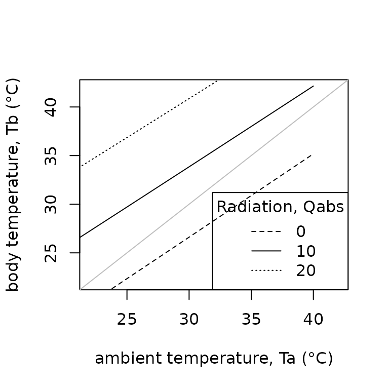
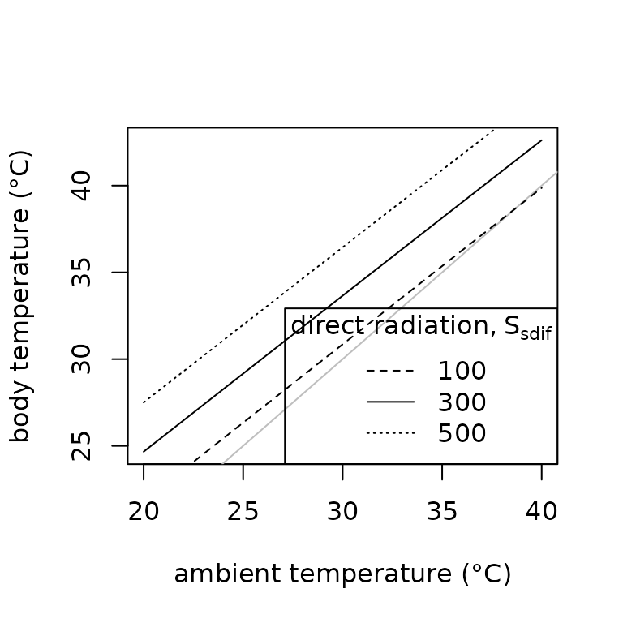
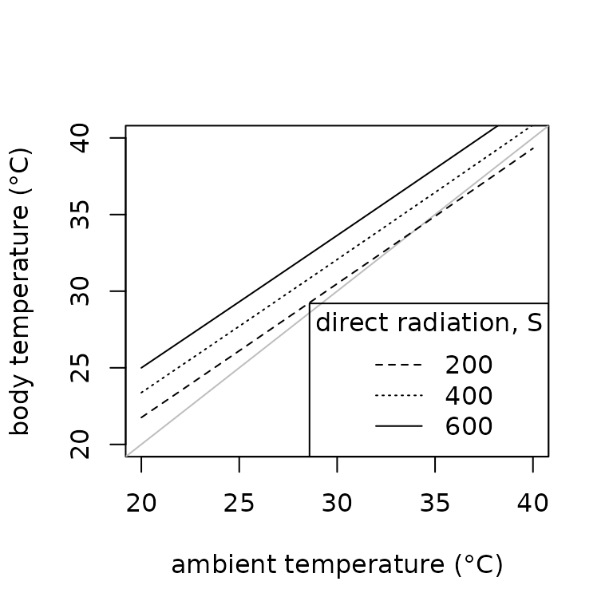
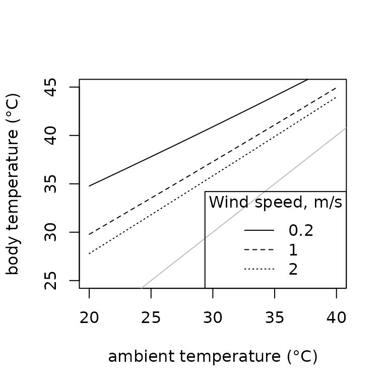
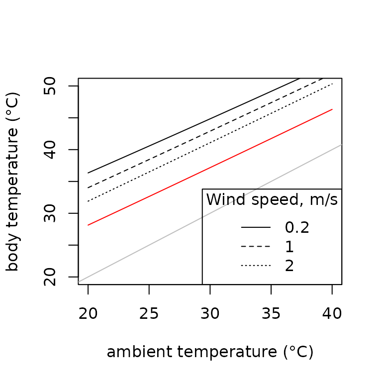
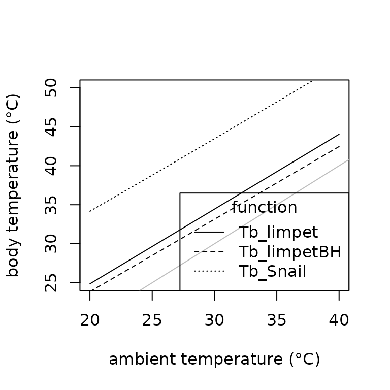

Using energy balances to estimate body temperatures
Lauren Buckley and the TrEnCh project, Department of Biology, University of Washington
2022-01-20
Source:vignettes/TeTutorial.Rmd
TeTutorial.RmdThis tutorial covers how to construct energy balances for applications such as estimating the body temperature of organisms. The tutorial first reviews general functions to estimate forms of heat exchange and balance the exchanges. Finally, we present functions to implement specialized energy balances for particular organisms.
Operative environmental temperatures
The body temperatures, \(T_b\), of organisms can depart dramatically from air temperatures due to energy exchange with the environment. Heat is gained by absorbing solar and thermal radiation and from metabolic reactions. Heat is lost through the organism’s emission of radiation and the evaporation of water. The organism exchanges heat with the surrounding air or water via convection and with the ground and other solid surfaces in contact via conduction. The balance of these heat exchanges can be estimated and is referred to as operative environmental temperature, \(T_e\). The \(T_e\) indicates the steady-state temperature of an organism with given physical properties in a particular environment (Bakken 1992).
Calculations of operative environmental temperatures are based on balancing energy input and output to organisms. The following accounting of heat gains and losses at the surface of the organism can be used to estimate \(T_e\) (Gates 2012): \[Q_{net} = Q_{abs} - Q_{emit} - Q_{conv} - Q_{cond} - Q_{met} - Q_{evap},\] where \(Q_{net}\) is the net energy exchange with the environment (W), \(Q_{abs}\) is the solar radiation absorbed (W), \(Q_{emit}\) is the net thermal radiation emitted (W), \(Q_{conv}\) is energy exchange due to convection (W), \(Q_{cond}\) is energy exchange due to conduction (W), \(Q_{met}\) is the energy emitted due to metabolism (W), and \(Q_{evap}\) is the energy emitted due to evaporative water loss (W).
The energy balance is available in TrenchR as follows:
Qnet_Gates(Qabs=500, Qemit=10, Qconv=100, Qcond=100, Qmet=10, Qevap=5)## [1] 275We briefly review each component of the energy balance below. Details are available in biophysical ecology texts (Gates 2012; Campbell and Norman 2012).
Solar radiation, Qabs
The solar radiation absorbed by animals, \(Q_{abs} (W)\), is the sum of direct \(S_{dir}\), diffuse \(S_{dif}\), and reflected \(S_{ref}\) solar radiation (\(W/m^2\)). The sum is weighted by the organism’s surface area \(A (m)\) exposed to the radiation sources. Additionally, all forms of incoming radiation are multiplied by the solar absorptivity of the animal surface (\(a\) proportion) to estimate absorbed radiation. The summation of incoming solar radiation is thus as follows: \[Qabs= a \times A_{dir} \times S_{dir} + a \times A_{dif} \times S_{dif} + a \times A_{ref} \times S_{ref},\] where \(A_{dir}\), \(A_{dif}\), and \(A_{ref}\) are the surface areas exposed to direct, diffuse, and reflected solar radiation, respectively.
The summation is available in R as follows:
plot(seq(100,1000,100), Qradiation_absorbed(a=0.9, A=1, psa_dir=0.4, psa_ref=0.4, S_dir=seq(100,1000,100), S_dif=200, a_s=0.5), type="l", xlab = expression("direct solar radiation" ~ (W/m^{2})), ylab = "solar radiation absorbed (W)")
points(seq(100,1000,100), Qradiation_absorbed(a=0.9, A=1, psa_dir=0.2, psa_ref=0.4, S_dir=seq(100,1000,100), S_dif=200, a_s=0.5), type="l", lty="dashed")
points(seq(100,1000,100), Qradiation_absorbed(a=0.45, A=1, psa_dir=0.4, psa_ref=0.4, S_dir=seq(100,1000,100), S_dif=200, a_s=0.5), type="l", lty="dotted")
points(seq(100,1000,100), Qradiation_absorbed(a=0.9, A=1, psa_dir=0.4, psa_ref=0.4, S_dir=seq(100,1000,100), S_dif=200, a_s=0.2), type="l", lty="dotdash")
legend("topleft", title="parameters", legend=c("a=0.9, psa_dir=0.4, a_s=0.5", "a=0.9, psa_dir=0.2, a_s=0.5", "a=0.45, psa_dir=0.4, a_s=0.5", "a=0.9, psa_dir=0.4, a_s=0.2"), lty=c("solid","dashed","dotted","dotdash") )In the functions, psa_dir and psa_ref are the proportions of surface area exposed to direct and reflected solar radiation, respectively. We assume psa_dif = psa_dir. The functions proportion_silhouette_area() and proportion_silhouette_area_shapes() provide assistance calculating the proportional of surface area exposed via estimating silhouette area. Additionally, see the microclimate tutorial for tools for estimating incoming solar radiation.
Thermal radiation, Qemit
The net rate of emission of thermal radiation from the surface of an animal, \(Q_{emit} (W)\), is determined by the difference between the surface temperature of the animal \(T_b (K)\) and the temperatures of the air \(T_a (K)\) and of the ground \(T_g (K)\). \(T_a\) is additionally used to estimate sky temperature \(T_{sky} (K)\), the effective radiant temperature of the sky as \(T_{sky}=1.22\times (T_a-273.15)-20.4+273.15\) (Gates 2012). The following expressions can be used to estimate \(Q_{emit} (W)\) for animals in enclosed and open environments, respectively: \[ enclosed: Q_{emit}= A_r \epsilon \sigma (T_b^4 - T_a^4)\\ open: Q_{emit}= \epsilon \sigma (A_s (T_b^4 - T_{sky}^4)+A_r (T_b^4 - T_g^4)), \] where \(A_s\) and \(A_r\) are the areas (\(m^2\)) exposed to the sky (or enclosure) and the ground, respectively; \(\epsilon\) is the longwave infrared emissivity of skin [proportion, 0.95 to 1 for most animals (Gates 2012); and \(\sigma\) is the Stefan-Boltzmann constant (\(5.673\times10^{-8} W m^{-2} K^{-4}\)).
The function is available in R as follows:
plot(293:313, Qemitted_thermal_radiation(epsilon=0.96, A=1, psa_dir=0.4, psa_ref=0.6, T_b=293:313, T_g=293, T_a=298, enclosed=FALSE), type="l", xlab = "body surface temperature, Tb (K)", ylab = "emitted thermal radiation, Qemit (W)")
points(293:313, Qemitted_thermal_radiation(epsilon=0.96, A=1, psa_dir=0.2, psa_ref=0.8, T_b=293:313, T_g=293, T_a=298, enclosed=TRUE), type="l", lty="dashed")
points(293:313, Qemitted_thermal_radiation(epsilon=0.96, A=1, psa_dir=0.4, psa_ref=0.8, T_b=293:313, T_g=283, T_a=298, enclosed=FALSE), type="l", lty="dotted")
points(293:313, Qemitted_thermal_radiation(epsilon=0.96, A=1, psa_dir=0.2, psa_ref=0.6, T_b=293:313, T_g=283, T_a=298, enclosed=FALSE), type="l", lty="dotdash")
legend("topleft", title="parameters", legend=c("psa_dir=0.4, T_g=293","psa_dir=0.2, T_g=293","psa_dir=0.4, T_g=283","psa_dir=0.2, T_g=283"), lty=c("solid","dashed","dotted","dotdash") )
Convection, Qconv
Animals exchange heat with the air or water they are immersed in at a rate determined by the temperature difference between the temperature of the animal, \(T_b (K)\), and that of the air or water, \(T_a (K)\). The rate is also determined by the animal’s surface area exposed to the air or water, which we estimate from the input parameters of the animal’s surface area, \(A (m^2)\) and the proportion of the surface area in contact with the surrounding fluid, \(\mbox{proportion}\). A heat transfer coefficient, \(H_L (W m^{-2} K^{-1})\), which can be estimated using the relations below, is used to quantify the rate of heat exchange. An enhancement factor multiplier, \(ef\), can also be incorporated to account for increases in heat exchange resulting from air turbulence in field conditions. Conduction can be estimated as follows: \[Q_{conv}= ef\cdot H_L(A\cdot \mbox{proportion})(T_a-T_b).\]
The function is available in R:
plot(293:313, Qconvection(T_a= 303,T_b= 293:313,H=5,A=0.0025, proportion=0.6), type="l", xlab = "ground temperature (K)", ylab = "Q convection (W)")
points(293:313, Qconvection(T_a= 303,T_b= 293:313,H=15,A=0.0025, proportion=0.6), type="l",lty="dashed")
points(293:313, Qconvection(T_a= 303,T_b= 293:313,H=5,A=0.0025, proportion=0.3), type="l",lty="dotted")
points(293:313, Qconvection(T_a= 303,T_b= 293:313,H=15,A=0.0025, proportion=0.3), type="l",lty="dotdash")
legend("topleft", title="parameters", legend=c("H=5, proportion=0.6","H=15, proportion=0.6","H=5, proportion=0.3","H=15, proportion=0.3"), lty=c("solid","dashed","dotted","dotdash") )The convective heat transfer coefficient depends on whether the heat exchange is free or forced (due to fluid flow). The variables involved in heat transfer can be combined into dimensionless groups that are used to compare the scales of heat exchange processes and thus whether modeling free or forced convection is more appropriate. We provide the primary dimensionless numbers.
The Nusselt number provides a dimensionless estimate of conductance and is estimated as \(Nu = H_L \cdot D / K\), where \(H_L\) is the convective heat transfer coefficient (\(W m^{-2} K^{-1}\)), \(D\) is the characteristic dimension (\(m\)), and \(K\) is thermal conductivity (\(W K^{-1}m^{-1}\)).
The Prandtl number describes the ratio of kinematic viscosity to thermal diffusivity as \(Pr= c_p \mu /K\), where \(c_p\) is the specific heat at constant pressure (\(J mol^{-1} K^{-1}\)) and \(\mu\) is dynamic viscosity (\(mol \:s^{-1}m^{-1}\)).
The Reynolds Number indicates the amount of turbulence in air or water flows and is estimated as the ratio of internal viscous forces: \(Re= VD / \nu\), where \(V\) is wind speed (\(m/s\)), \(D\) is the characteristic dimension (\(m\)), and \(\nu\) is the kinematic viscosity (\(m^2 s^{-1}\)). Kinematic viscosity is the ratio of dynamic viscosity to the density of the fluid.
The Grashof number describes the ability of a parcel of fluid warmer or colder than the surrounding fluid to rise against or fall with the attractive force of gravity. It is estimated as the ratio of a buoyant force times an inertial force to the square of a viscous force: \(Gr = g D^3 \frac{\mid Tg-Ta \mid}{Ta {\nu}^2}\), where \(g\) is gravitational acceleration (\(g=9.8 m/s\)).
The dimensionless groups are available in R as follows:
plot(1:30, Nusselt_number(H_L=1:30, D=0.01, K=0.5), type="l", xlab = expression("heat transfer coefficient" ~ (W ~ m^{-2} ~ K^{-1})), ylab = "Nusselt number")
points(1:30, Nusselt_number(H_L=1:30, D=0.01, K=1.5), type="l", lty="dashed")
points(1:30, Nusselt_number(H_L=1:30, D=0.05, K=0.5), type="l", lty="dotted")
points(1:30, Nusselt_number(H_L=1:30, D=0.05, K=1.5), type="l", lty="dotdash")
legend("topleft", title="parameters", legend=c("D=0.01, K=0.5","D=0.01, K=1.5","D=0.05, K=0.5","D=0.05, K=1.5"), lty=c("solid","dashed","dotted","dotdash") )
plot(1:30, Prandtl_number(c_p=1:30, mu=0.00001, K=0.5), type="l", xlab = expression("specific heat at constant pressure" ~ (J ~ mol^{-1} ~ K^{-1})), ylab = "Prandtl number")
points(1:30, Prandtl_number(c_p=1:30, mu=0.00002, K=0.5), type="l", lty="dashed")
points(1:30, Prandtl_number(c_p=1:30, mu=0.00001, K=1.5), type="l", lty="dotted")
points(1:30, Prandtl_number(c_p=1:30, mu=0.00002, K=1.5), type="l", lty="dotdash")
legend("topleft", title="parameters", legend=c("mu=0.00001, K=0.5","mu=0.00002, K=0.5","mu=0.00001, K=1.5","mu=0.00002, K=1.5"), lty=c("solid","dashed","dotted","dotdash") )
plot(seq(0,5,0.2), Reynolds_number(u=seq(0,5,0.2), D=0.001, nu=1), type="l", xlab = "wind speed (m/s)", ylab = "Reynolds number")
points(seq(0,5,0.2), Reynolds_number(u=seq(0,5,0.2), D=0.001, nu=1.5), type="l", lty="dashed")
points(seq(0,5,0.2), Reynolds_number(u=seq(0,5,0.2), D=0.002, nu=1), type="l", lty="dotted")
points(seq(0,5,0.2), Reynolds_number(u=seq(0,5,0.2), D=0.002, nu=1.5), type="l", lty="dotdash")
legend("topleft", title="parameters", legend=c("D=0.001, nu=1","D=0.001, nu=1.5","D=0.002, nu=1","D=0.002, nu=1.5"), lty=c("solid","dashed","dotted","dotdash") )
plot(seq(0,0.01,0.001), Grashof_number(Ta=30, Tg=35, D=seq(0,0.01,0.001), nu=1.0), type="l", xlab = "characteristic dimension (m)", ylab = "Grashof number")
points(seq(0,0.01,0.001), Grashof_number_Gates(Ta=30, Tg=35, beta=0.00367, D=seq(0,0.01,0.001), nu=1.0), type="l", col="red")
points(seq(0,0.01,0.001), Grashof_number(Ta=30, Tg=35, D=seq(0,0.01,0.001), nu=1.4), type="l",lty="dashed")
points(seq(0,0.01,0.001), Grashof_number_Gates(Ta=30, Tg=35, beta=0.00367, D=seq(0,0.01,0.001), nu=1.4), type="l", col="red",lty="dashed")
legend("topleft", title="parameters", legend=c("Grashof_number, nu=1","Grashof_number_Gates, nu=1","Grashof_number, nu=1.4","Grashof_number_Gates, nu=1.4"), lty=c("solid","dashed","dotted","dotdash") )Relations among the dimensionless groups can also be used for estimation. Empirically-derived relationships can be used to estimate the Nusselt number \(Nu\) from the Reynolds number \(Re\) or the Grashof number \(Gr\). Comparisons of \(Gr\) and \(Re\) allow determining whether modelling free or forced convection is appropriate. Forced convection is appropriate when \(Gr \leq 16 Re^2\). For convenience, we provide the relationships as R functions:
plot(1:10, Nu_from_Re(Re=1:10, taxa="sphere"), type="l", xlab = "Re", ylab = "Nu", ylim=c(0,4))
points(1:10, Nu_from_Re(Re=1:10, taxa="cylinder"), type="l", lty="dashed")
points(1:10, Nu_from_Re(Re=1:10, taxa="frog"), type="l", lty="dotted")
points(1:10, Nu_from_Re(Re=1:10, taxa="lizard_traverse_to_air_flow"), type="l", lty="dotdash")
points(1:10, Nu_from_Re(Re=1:10, taxa="lizard_parallel_to_air_flow"), type="l", lty="dotdash", col="red")
points(1:10, Nu_from_Re(Re=1:10, taxa="lizard_surface"), type="l", lty="dotdash", col="orange")
points(1:10, Nu_from_Re(Re=1:10, taxa="lizard_elevated"), type="l", lty="dotdash", col="green")
points(1:10, Nu_from_Re(Re=1:10, taxa="flyinginsect"), type="l", lty="longdash")
points(1:10, Nu_from_Re(Re=1:10, taxa="spider"), type="l", lty="twodash")
legend("topright", title="taxa", legend=c("sphere","cylinder","frog","lizard_traverse_to_air_flow","lizard_parallel_to_air_flow","lizard_surface","lizard_elevated","flyinginsect","spider"), lty=c("solid","dashed","dotted","dotdash","dotdash","dotdash","dotdash","longdash","twodash"), col=c("black","black","black","black","red","orange","green","black","black" ) )
Nu_from_Gr(Gr=5)## [1] 0.7177674
Free_or_forced_convection(Gr=100, Re=5)## [1] "intermediate condition, mixed convection based on Nusselt numbers is appropriate"
Free_or_forced_convection(Gr=1, Re=5)## [1] "forced convection"
Free_or_forced_convection(Gr=1000, Re=5)## [1] "free convection"We offer methods to estimate the convective heat transfer coefficient based on either empirical measurements (heat_transfer_coefficient()) or approximating the animal shape as a sphere (heat_transfer_coefficient_approximation()). Approximating the animal shape as a sphere enables simplification while also producing a reasonable approximation (Mitchell 1976). The functions approximate forced convective heat transfer as a function of windspeed \(V (m/s)\), the characteristic dimension \(D (m)\), the thermal conductivity of the air \(K (W m^{-1} K^{-1})\), the kinematic viscosity of the air \(\nu (m^2 s^{-1})\), and the taxa or a generic shape. An additional, simplified function (heat_transfer_coefficient_simple()) provides a reasonable approximation based on \(V\) and \(D\) for most environmental conditions.
par(mar=c(5,5,3,2))
plot(seq(0,3,0.25), heat_transfer_coefficient(V=seq(0,3,0.25),D=0.05,K= 25.7 * 10^(-3),nu= 15.3 * 10^(-6), "sphere"), type="l", xlab = "Air velocity (m/s)", ylab = expression("heat transfer coefficient," ~ H[L] ~ (W ~ m^{-2} ~ K^{-1})))
points(seq(0,3,0.25), heat_transfer_coefficient(V=seq(0,3,0.25),D=0.05,K= 25.7 * 10^(-3),nu= 15.3 * 10^(-6), "cylinder"), type="l", lty="dashed")
points(seq(0,3,0.25), heat_transfer_coefficient(V=seq(0,3,0.25),D=0.05,K= 25.7 * 10^(-3),nu= 15.3 * 10^(-6), "frog"), type="l", lty="dotted")
points(seq(0,3,0.25), heat_transfer_coefficient(V=seq(0,3,0.25),D=0.05,K= 25.7 * 10^(-3),nu= 15.3 * 10^(-6), "lizard_surface"), type="l", lty="dotdash")
points(seq(0,3,0.25), heat_transfer_coefficient(V=seq(0,3,0.25),D=0.05,K= 25.7 * 10^(-3),nu= 15.3 * 10^(-6), "lizard_elevated"), type="l", lty="dotdash")
points(seq(0,3,0.25), heat_transfer_coefficient(V=seq(0,3,0.25),D=0.05,K= 25.7 * 10^(-3),nu= 15.3 * 10^(-6), "flyinginsect"), type="l", lty="longdash")
points(seq(0,3,0.25), heat_transfer_coefficient(V=seq(0,3,0.25),D=0.05,K= 25.7 * 10^(-3),nu= 15.3 * 10^(-6), "spider"), type="l", lty="twodash")
legend("bottomright", title="taxa", legend=c("sphere","cylinder","frog","lizard_surface","lizard_elevated","flyinginsect","spider"), lty=c("solid","dashed","dotted","dotdash","dotdash","dotdash","dotdash","longdash","twodash") )
par(mar=c(5,5,3,2))
plot(seq(0,3,0.25), heat_transfer_coefficient_approximation(V=seq(0,3,0.25),D=0.05,K= 25.7 * 10^(-3),nu= 15.3 * 10^(-6), "sphere"), type="l", xlab = "Air velocity (m/s)", ylab = expression("heat transfer coefficient," ~ H[L] ~ (W ~ m^{-2} ~ K^{-1})))
points(seq(0,3,0.25), heat_transfer_coefficient_approximation(V=seq(0,3,0.25),D=0.05,K= 25.7 * 10^(-3),nu= 15.3 * 10^(-6), "frog"), type="l", lty="dashed")
points(seq(0,3,0.25), heat_transfer_coefficient_approximation(V=seq(0,3,0.25),D=0.05,K= 25.7 * 10^(-3),nu= 15.3 * 10^(-6), "lizard"), type="l", lty="dotted")
points(seq(0,3,0.25), heat_transfer_coefficient_approximation(V=seq(0,3,0.25),D=0.05,K= 25.7 * 10^(-3),nu= 15.3 * 10^(-6), "flyinginsect"), type="l", lty="dotdash")
points(seq(0,3,0.25), heat_transfer_coefficient_approximation(V=seq(0,3,0.25),D=0.05,K= 25.7 * 10^(-3),nu= 15.3 * 10^(-6), "spider"), type="l", lty="longdash")
legend("bottomright", title="taxa", legend=c("sphere","frog","lizard","flyinginsect","spider"), lty=c("solid","dashed","dotted","dotdash","longdash") )
plot(seq(0,3,0.25), heat_transfer_coefficient_simple(V=seq(0,3,0.25),D=0.05, type = "Spotila"), type="l", xlab = "Air velocity (m/s)", ylab = expression("heat transfer coefficient," ~ H[L] ~ (W ~ m^{-2} ~ K^{-1})))
points(seq(0,3,0.25), heat_transfer_coefficient_simple(V=seq(0,3,0.25),D=0.03, type = "Spotila"), type="l", lty="dashed")
points(seq(0,3,0.25), heat_transfer_coefficient_simple(V=seq(0,3,0.25),D=0.07, type = "Spotila"), type="l", lty="dotted")
legend("bottomright", title="characteristic dimension (m)", legend=c(0.03,0.05,0.07), lty=c("dashed","solid","dotted") )Conduction, Qcond
Animals exchange heat with the substrate and other surfaces via contact proportional to the difference between the surface temperature of the animal, \(T_b (K)\), and the substrate temperature, \(T_s (K)\). This conduction occurs via diffusion of heat. The extent of energy exchange is additionally determined by the area of contact and the thickness of the skin or other animal surface (assumes a well-mixed interior, see NicheMapR for approaches without this assumption). Finally, the rate of diffusion depends on the thermal conductivity of the materials in contact. Our two basic functions for estimating conduction differ in whether the rate-limiting step is the thermal conductivity of the animal [conductance_animal()] or the substrate [conductance_substrate()]. The thermal conductivity of the ground is generally greater than that of animal tissues, so animal thermal conductivity is generally the rate-limiting step and most applications should use conductance_animal().
Both functions take as parameters the animal’s surface area, \(A (m^2)\), and the proportion of the surface area in contact with the substrate, \(\mbox{proportion}\).
When animal conductance is the rate limiting step, \(Q_{cond}\) can be estimated as follows: \[Q_{cond}= A\cdot \mbox{proportion} \cdot K(T_b-T_g)/d, \] where \(K\) is thermal conductivity (\(W K^{-1} m^{-1}\)), \(T_g\) is ground (surface) temperature \((K)\), \(T_b\) is body temperature \((K)\), and \(d\) is the mean thickness of the animal skin (surface, \(m\)). This formulation assumes the organism has a well-mixed interior rather than an interior temperature gradient.
When substrate thermal conductivity is the rate-limiting step, \(Q_{cond}\) can be estimated as follows: \[Q_{cond} = A\cdot \mbox{proportion} \cdot (2K_g/D)(T_b-T_g),\] where \(K_g\) is the thermal conductivity of substrate (\(W K^{-1} m^{-1}\)) and \(D\) is the characteristic dimension of the animal (\(m\)).
The functions are available in R:
plot(293:313, Qconduction_animal(T_g= 293:313,T_b=303,d=10^-6,K=0.3,A=10^-3, proportion=0.2), type="l", xlab = "ground temperature (K)", ylab = "Q conductance (W)")
points(293:313, Qconduction_animal(T_g= 293:313,T_b=303,d=10^-6,K=0.5,A=10^-3, proportion=0.2), type="l", lty="dashed")
points(293:313, Qconduction_animal(T_g= 293:313,T_b=303,d=10^-6,K=0.3,A=10^-3, proportion=0.4), type="l", lty="dotted")
points(293:313, Qconduction_animal(T_g= 293:313,T_b=303,d=10^-6,K=0.5,A=10^-3, proportion=0.4), type="l", lty="dotdash")
legend("topright", title="parameters", legend=c("K=0.3, proportion=0.2","K=0.5, proportion=0.2","K=0.3, proportion=0.4","K=0.5, proportion=0.4"), lty=c("solid","dashed","dotted","dotdash") )
plot(293:313, Qconduction_substrate(T_g= 293:313,T_b=303,D=0.01,K_g=0.3,A=10^-2, proportion=0.2), type="l", xlab = "ground temperature (K)", ylab = "Q conductance (W)")
points(293:313, Qconduction_substrate(T_g= 293:313,T_b=303,D=0.01,K_g=0.5,A=10^-2, proportion=0.2), type="l", lty="dashed")
points(293:313, Qconduction_substrate(T_g= 293:313,T_b=303,D=0.01,K_g=0.3,A=10^-2, proportion=0.4), type="l", lty="dotted")
points(293:313, Qconduction_substrate(T_g= 293:313,T_b=303,D=0.01,K_g=0.5,A=10^-2, proportion=0.4), type="l", lty="dotdash")
legend("topright", title="parameters", legend=c("K=0.3, proportion=0.2","K=0.5, proportion=0.2","K=0.3, proportion=0.4","K=0.5, proportion=0.4"), lty=c("solid","dashed","dotted","dotdash") )Metabolism, Qmet
Rates of heat production associated with metabolism are generally estimated using scaling relationships based on generalizing empirical data. Metabolic rates scale as a power law function of mass with an exponent less than 1 such that the per-mass metabolic rate declines with increasing mass. Metabolic rates also increase exponentially with temperature. The general form of the relationship is \(B=M^x \exp(-E_i/{kT})\), where \(M\) is mass, \(x\) is an exponent approximating 0.75, \(E_i\) is the average activation energy for the rate-limiting enzyme-catalyzed biochemical reactions of metabolism, \(k\) is the Boltzmann constant, and \(T\) is body temperature (Gillooly et al. 2001). We offer functions that both do not [Qmetabolism_from_mass()] and do [Qmetabolism_from_mass_temp()] include temperature dependence for a variety of taxa.
plot(1:100, Qmetabolism_from_mass(m=1:100,"bird"), type="l", xlab = "mass (g)", ylab = "metabolism (W)", log='xy', ylim=c(0.1,2))
points(1:100, Qmetabolism_from_mass(m=1:100,"mammal"), type="l", lty="dashed")
points(1:100, Qmetabolism_from_mass(m=1:100,"reptile"), type="l", lty="dotted")
legend("topleft", title="taxa", legend=c("bird","mammal","reptile"), lty=c("solid","dashed","dotted") )
plot(1:100, Qmetabolism_from_mass_temp(m=1:100, T_b=303,"bird"), type="l", xlab = "mass (g)", ylab = "metabolism (W)", ylim=c(0,0.1))
points(1:100, Qmetabolism_from_mass_temp(m=1:100, T_b=303,"reptile"), type="l", lty="dotted")
points(1:100, Qmetabolism_from_mass_temp(m=1:100, T_b=303,"amphibian"), type="l", lty="dotdash")
points(1:100, Qmetabolism_from_mass_temp(m=1:100, T_b=303,"invertebrate"), type="l", lty="twodash")
legend("top", title="taxa", legend=c("bird,mammal","reptile","amphibian","invertebrate"), lty=c("solid","dotted","dotdash","twodash") )
plot(293:313, Qmetabolism_from_mass_temp(m=5, T_b=293:313,"bird"), type="l", xlab = "temperature (K)", ylab = "metabolism (W)", ylim=c(0,0.1))
points(293:313, Qmetabolism_from_mass_temp(m=5, T_b=293:313,"reptile"), type="l", lty="dotted")
points(293:313, Qmetabolism_from_mass_temp(m=5, T_b=293:313,"amphibian"), type="l", lty="dotdash")
points(293:313, Qmetabolism_from_mass_temp(m=5, T_b=293:313,"invertebrate"), type="l", lty="twodash")
legend("topleft", title="taxa", legend=c("bird,mammal","reptile","amphibian","invertebrate"), lty=c("solid","dotted","dotdash","twodash") )Evaporation, Qevap
We provide functions to estimate heat loss associated with evaporative water loss. We offer an empirically-derived relationship for a lizard (Porter et al. 1973; in Gates 2012) and a function based on resistances for amphibians (Spotila, O’connor, and Bakken 1992). The function for amphibians is based on the latent heat of vaporization of water: evaporation of water results in heat loss at a rate of \(2.44 \times 10^6 J kg^{-1}\) at biological temperatures.
The rate of water loss for an amphibian with fully wetted skin can be expressed as \[ E_c= A (\rho_s-h \rho_a)/r_e,\]
where \(A\) is surface area (\(m^2\)), \(r_e\) is the external (convective) resistance to water vapor transport (\(s/m\)), \(\rho_s\) is the saturation water vapor density at skin surface (\(kg/m^3\)), \(h\) is relative humidity (between 0 and 1), and \(\rho_a\) is the saturation water vapor density in ambient air (\(kg/m^3\)).
The rate of water loss for an amphibian without fully wetted skin can be expressed as \[E_c= A (\rho_s-h\rho_a)/(r_i+r_e),\] where \(r_i\) is the internal (cutaneous) resistance to vapor transport (\(s/m\)).
We provide R functions for heat loss through evaporation as the product of \(E_c\) and the latent heat of vaporization of water:
vp= saturation_vapor_pressure(293:313)#kPa
#convert to kg/m^3
rho_s= vp*0.032 #kg/m^3
vp= saturation_vapor_pressure(293:313-10)#kPa
#convert to kg/m^3
rho_a= vp*0.032 #kg/m^3
temps= 293:313
Qevaps= rep(NA,21)
Qevaps_wet= rep(NA,21)
for(ind in 1:21){
Qevaps[ind]=Qevaporation(A=0.1, T_b=temps[ind], taxa="amphibian", rho_s=rho_s[ind], rho_a=rho_a[ind], h=0.5, H=20, r_i=50)
Qevaps_wet[ind]=Qevaporation(A=0.1, T_b=temps[ind], taxa="amphibian_wetskin", rho_s=rho_s[ind], rho_a=rho_a[ind], h=0.5, H=20, r_i=50)
}
plot(temps, Qevaps, type="l", xlab = "body temperature (K)", ylab = "evaporative heat loss (W)", lty="dashed", ylim=c(0,400))
points(temps, Qevaps_wet, type="l", lty="dotted")
Qevap= unlist(lapply(293:313, FUN=Qevaporation, A=0.1, taxa="lizard"))
points(293:313, Qevap, type="l")
legend("right", title="taxa", legend=c("amphibian","amphibian_wetskin","lizard"), lty=c("dashed","dotted","solid") )We estimate external resistance to water vapor transport, \(r_e\), using the Lewis rule describing the relationships among the coefficients for heat and mass transport: \(r_e= 0.93 \rho c_p/H_L\), where \(\rho\) is the density of air (\(kg m^{-3}\)), \(c_p\) is the specific heat of air at constant pressure (\(J kg^{-1}°C^{-1}\)), and \(H_L\) is the convective heat transfer coefficient (\(W m^{-2} °C^{-1}\)). We approximate \(\rho c_p\)as 1,200 \(J m^{-3}°C^{-1}\) as commonly done in biological applications (Spotila, O’connor, and Bakken 1992). We provide the relationship for \(r_e\) as a function:
par(mar=c(5,5,3,2))
plot(10:30, external_resistance_to_water_vapor_transfer(H=10:30), type="l", xlab = expression("heat transfer coefficient" ~ (W ~ m^{-2} ~ "°" ~ C^{-1})), ylab = expression("external resistance, " ~ r[e] ~ (sm^{-1})))
At constant temperatures, the relationship between vapor pressure and vapor density is linear and vapor pressure can be approximated at temperatures between \(0°C\) and \(40°C\) as \(e_s= 10^{0.02604 T_a+2.82488}\), where \(T_a\) is air temperature (\(°C\)). We provide the approximation as a function:
plot(10:30, saturation_water_vapor_pressure(T_a=10:30), type="l", xlab = "temperature (°C)", ylab = "saturation water vapor pressure (Pa)")Solving for operative environmental temperature, Te
TrenchR primarily includes models for calculating the operative temperatures of organisms that have reached an equilibrium with their environment (“steady-state”, no heat retention). The following function uses the relationships above to solve the energy balance for \(Te (K)\).
t.seq= lapply(293:313, FUN=Tb_Gates, A=0.1, D=0.001, psa_dir=0.6, psa_ref=0.4, psa_air=0.6, psa_g=0.0, T_g=303, Qabs=10, epsilon=0.95, H_L=10, ef=1.3, K=0.5)
plot(293:313, t.seq, type = "l", xlab = "ambient temperature, Ta (K)", ylab = "body temperature, Tb (K)", xlim=c(295,315), ylim=c(295,315))
abline(a=0,b=1, col="gray")
t.seq= lapply(293:313, FUN=Tb_Gates, A=0.1, D=0.001, psa_dir=0.6, psa_ref=0.4, psa_air=0.6, psa_g=0.0, T_g=303, Qabs=0, epsilon=0.95, H_L=10, ef=1.3, K=0.5)
points(293:313, t.seq, type = "l", lty="dashed")
t.seq= lapply(293:313, FUN=Tb_Gates, A=0.1, D=0.001, psa_dir=0.6, psa_ref=0.4, psa_air=0.6, psa_g=0.0, T_g=303, Qabs=20, epsilon=0.95, H_L=10, ef=1.3, K=0.5)
points(293:313, t.seq, type = "l", lty="dotted")
legend("bottomright", title="Radiation, Qabs", legend=c(0,10,20), lty=c("dashed","solid","dotted") )Campbell and Norman (2012) use a somewhat simplified energy balance to express \(Te\) as a function of \(Ta\) plus or minus a temperature increment determined by absorbed radiation, wind speed, and animal morphology: \[ T_e=T_a+(S_{abs}-Q_{emit})/(c_p(g_r+g_{Ha})),\] where \(Ta\) is air temperature \((K)\), \(S_{abs}\) is the solar and thermal radiation absorbed (\(W m^{-2}\)), \(Qemit\) is emitted thermal radiation (\(W m^{-2}\)), \(c_p\) is the specific heat of air (\(J mol^{-1} K^{-1}\)), \(g_{r}\) is radiative conductance \((mol\:m^{-2} s^{-1})\), and \(g_{Ha}\) is the boundary conductance \((mol\:m^{-2} s^{-1})\). The model is based on estimating \(T_e\) for a blackbody (perfectly absorbing) cavity with air temperatures equal to surface temperatures (\(T_a=T_s\)). The model assumes that the cavity provides the same heat load as the natural environment and thus equates metabolic heat production and evaporative cooling in the two environments. The formulation assumes a well-mixed interior of the animal and also omits conduction with the substrate. In this scenario, organisms emit thermal radiation from their surface proportional to the fourth power of \(T_a\): \[Q_{emit}= \epsilon \sigma T_a^4 ,\] where \(\epsilon\) is the proportional longwave infrared emissivity of skin (0.95-1 for most animals, (Gates 2012)) and \(\sigma\) is the Stefan-Boltzmann constant (\(5.673*10^{-8} W m^{-2} K^{-4}\)).
The thermal radiation exchanged between the animals and the walls of the cavity is proportional to the temperature differences and the radiative conductance. Cambell and Norman (2012) thus use a denominator term that combines thermal radiative exchange with convective heat exchange. The radiative conductance describing the heat exchange between the core of the animal and the environment is estimated as \(g_r= 4 \sigma Ta^3/c_p(mol\:m^{-2} s^{-1})\). The boundary conductance (heat exchange with the air via convection) is estimated assuming forced convection driven by naturally turbulent wind and an empirical approximation of animal shapes (Mitchell 1976): \[g_{Ha}(mol \:m^{-2} s^{-1})= 1.4 \times 0.135 \sqrt{(V/D)},\] where 1.4 is a factor to account for increased convection in natural environments, \(V\) is wind speed (\(m/s\)), and \(D\) is the characteristic dimension of the animal (\(m\)).
The function to calculate \(T_e\) (called \(T_b\) for simplicity) is available in R as follows (including the above calculations of \(Q_{emit}\), \(g_r\), and \(g_{Ha}\)):
plot(293:313, Tb_CampbellNorman(T_a=293:313, T_g=303, S=600, alpha_S=0.7, alpha_L=0.96, epsilon=0.96, c_p=29.3, D=0.17, V=1), type="l", xlab = "air temperature (K)", ylab = "body temperature (K)", xlim=c(295,310), ylim=c(290,340))
abline(a=0, b=1, col="gray")
points(293:313, Tb_CampbellNorman(T_a=293:313, T_g=303, S=200, alpha_S=0.7, alpha_L=0.96, epsilon=0.96, c_p=29.3, D=0.17, V=1), type="l", lty="dashed")
points(293:313, Tb_CampbellNorman(T_a=293:313, T_g=303, S=400, alpha_S=0.7, alpha_L=0.96, epsilon=0.96, c_p=29.3, D=0.17, V=1), type="l", lty="dotted")
legend("bottomright", title= expression("Radiation, Sabs" ~ (W ~ m^{-2})), legend=c(200,400,600), lty=c("dashed","dotted","solid") )
Specialized energy balance models and functions
In addition to providing general functions that can be used to build heat budget models predicting the body temperatures for a variety of organisms, we implement specialized operative temperature models that have been developed for a variety of organisms.
Lizards
We adapted a biophysical model (Tb_lizard()) to calculate operative environmental temperature, \(T_e (K)\), for lizards from Buckley (2007). The function follows the modeling approach contained Campbell and Norman (2012).
Day Length and Sun Angles
The function constrains the lizard’s foraging to hours of daylight and uses the relations below to calculate day length and the time of solar noon. The function calculates the solar declination, \(\delta\) (rad), the angular distance of the sun north or south of the earth’s equator: \[\delta= \arcsin[0.39795 \cos(0.21631+2 \arctan (0.967 \tan [0.0086(-186+J)]))] \] where \(J\) is the calendar day, with \(J=1\) on January 1. One can then calculate day length, \(h_{day} (h)\), using the CBM model (Forsythe et al. 1995): where \(\phi\) is latitude (rad).
The time of solar noon (\(h\)) is calculated as \(t_0=12-LC-ET\) where \(LC\) is the longitude correction (h) and \(ET\) is the equation of time (h). The \(LC\) is a +1/15-h correction for each degree that a location is west of a standard meridian, which occurs at 0°, 15°, …, 345°. The ET corrects for the difference between sun time and clock time based on calendar day as follows: \[ET=\frac{-104.7\sin f+596.2 \sin{2f} +4.3 \sin{3f} -12.7 \sin{4f} -429.3 \cos{f} -2.0 \cos{2f}+19.3 \cos{3f}}{3600},\\f=\frac{\pi}{180}(279.575+0.9856J)\] In addition, the offset needs to be taken into consideration. Although meridians are set every 15° and the time zones are supposed to equal to the time of the meridian that is closest to them, (thus anywhere between 7.5°E to 22.5°E should equal the time at the meridian at 15°E) the actual time zones do not necessarily follow the pattern. For, example, Madrid is located at 3.7°W but the time zone in Spain is set to that of 15°E (GMT+1). This produces an error in the calculations because noon at 3.7°W would be considered equal to noon at 0° when in reality, it should be 11 am of 0°. To eliminate this error, an offset value can be input.
The zenith angle, \(\psi\) (rad), is the sun angle measured from vertical, \(\cos{\psi}=\sin\delta \sin\phi + \cos\delta \cos\phi\cos\frac{\pi}{12(h-t_0)}\), where \(h\) is hour.
Azimuth angle, \(AZ\) (rad), is the angle between the south vector and the sun’s vector on the horizontal plane. The azimuth angle of the sun can be calculated from \[cos(AZ) = \frac{-(sin\delta-cos\psi sin\phi)}{cos\phi sin\psi}\] Within the two values that are produced from this formula, the correct angle is determined based on the longitude of the measured place.
Radiation and Environmental Temperature
Central to the thermal influence of radiation is the Stefan‐Boltzmann law, which expresses the total radiant energy over all wavelengths admitted per unit surface area of a blackbody radiator. The law yields the emitted flux density, \(B\) (\(W m^2\)), \(B= \sigma(T_a+273)^4\), where \(\sigma\) is the Stefan‐Boltzmann constant (\(5.67×10^{−8} W m^{−2} K^{−4}\)). Emissivity, \(\epsilon(\lambda)\), where \(\lambda\) is the wavelength, is the fraction of blackbody emittance at a given wavelength emitted by the surface of a material. Gray bodies are those with no wavelength dependence of the emissivity. Thus, emitted energy of a gray body is \(\phi (W m^{−2})= \epsilon B\). We assume lizards are gray bodies, which is reasonable for most natural surfaces. The emissivity of most natural surfaces ranges from 0.95 to 1.0. The function uses the emissivity value of 0.965 measured by Bartlett and Gates (1967) for a Sceloporus lizard. However, the emissivity of a clear atmosphere is substantially lower. We use the approximation by Swinbank (1963) to estimate clear sky emissivity, \(\epsilon_{ac}=9.2 \times 10^{-6}(T_a+273)^2.\)
We first consider convective heat transport between the lizard’s body and the environment. The boundary conductance of air (\(mol \: m^{−2} s^{−1}\)) is expressed as \[g_{Ha}=1.4 \times 0.135 \sqrt{u/d} ,\] where \(u\) is wind velocity (\(m s^{−1}\)) and \(d\) is the characteristic dimension (\(m\)). Assuming that wind is blowing parallel to the axis of a cylindrical approximation of a lizard, \(d\) is the lizard’s length (snout-vent length (\(m\))). A factor of 1.4 is introduced to account for the increased convection due to environmental turbulence (Mitchell 1976). We additionally consider radiative conductance, the exchange of thermal radiation between the lizard and the environment proportional to temperature differences. The radiative conductance (\(mol \:m^{−2} s^{−1}\)) is expressed as \[g_r=\frac{4 \epsilon \sigma (T_a+273)^3}{c_p},\] where \(c_p\) is the specific heat of air (\(29.3 J \: mol^{−1} K^{−1}\)).
We then turn to calculate the components of the radiant energy budget of a lizard. We estimate the solar (shortwave) component of this quantity by aggregating flux densities for four radiation streams: the direct irradiance on a surface perpendicular to the beam, \(S_p (W m^{−2})\); the diffuse sky irradiance on a horizontal plane, \(S_d (W m^{−2})\); the total irradiance of a horizontal surface, \(S_t (W m^{−2})\); and the reflected radiation from the ground, \(S_r (W m^{−2})\). The calculation of these flux densities requires the introduction of several additional quantities. The atmospheric transmissivity, \(\tau\), ranges between 0.6 and 0.7 for typical clear sky conditions (Gates 1980). We thus assume \(\tau\) = 0.65. The solar constant, \(S_{p0}\), indicates extraterrestrial flux density to be \(1,360 W m^{−2}\). Optical air mass number, \(m_a\), is the ratio of slant path length through the atmosphere to zenith path length and is a function of atmospheric pressure, \(p_a (kPa)\): \[p_a=101.3\exp(-E/8200),\] where \(E\) is the elevation in meters above sea level. We can then calculate \(m_a\) as \(m_a=\frac{p_a}{101.3 \cos\psi}\).
Direct irradiance is a function of the distance a solar beam travels through the atmosphere; the transmittance of the atmosphere, \(\tau\); and the incident flux density, \(S_{p0}\): \(S_p=S_{p0}\tau^{m_a}\). Sky diffuse radiation can be approximated using an empirical relation (Liu and Jordan 1960), \(S_d=0.3(1-\tau^{m_a})S_{p0}\cos\psi\). Solar irradiance is the sum of diffuse sky irradiance and the beam irradiance on a surface: \(S_t=S_d+S_p \cos\psi\). Finally, reflected radiation is the product of albedo, \(\rho_S\), and the total shortwave irradiance: \(S_r=\rho_S S_t\). Albedo was empirically derived from satellite images and is the surface reflectance for the solar waveband.
The longwave component of a lizard’s radiant energy budget can be estimated using the Stefan‐Boltzmann law. The longwave flux density from atmosphere, \(L_a (W m^{−2})\), is computed as \(L_a=\epsilon_{ac}\sigma(T_a+273)^4\), where \(\epsilon_{ac}\) is clear sky emissivity. The longwave flux density from the ground is \(L_g=\epsilon_s \sigma T_s^4\), where \(\epsilon_s\) is surface emissivity.
One can then aggregate short‐ and longwave radiation to compute absorbed radiation: \[R_{abs}+\alpha_s(F_PS_p+F_dS_d+F_rS_r)+\alpha_L(F_aL_a+F_gL_g) ,\] where \(\alpha_S\) and \(\alpha_L\) are the absorptivities in the solar and thermal wavebands, respectively, and \(F_p\), \(F_d\), \(F_r\), \(F_a\), and \(F_g\) are view factors between the surface of the lizard and sources of radiation. Solar absorptivity, \(\alpha_S\), is approximately 0.9 for lizards (Gates 2012). Because absorptivity in a given waveband is equal to emissivity in that waveband, we use the thermal absorptivity, \(\alpha_L\), of 0.965, as measured by Bartlett and Gates (1967).
View factors refer to the fraction of radiation that is intercepted by the lizard. The beam view factor, \(F_p\), for a lizard is the ratio of the projected area perpendicular to the solar beam, \(A_p\), to the total animal area, \(A\), \(F_p=A_p/A\). We use an empirically derived relationship that was developed for a standing Callisaurus (Muth 1977). We assume a relative azimuth angle of 90°, which indicates that the long axis of the lizard is perpendicular to incoming solar radiation: \[ A_p= \frac{[(-1.1756\times10^{-4})\psi^2+(-9.2594\times10^{-2})\psi+26.2409]A}{100}\] Roughgarden et al. (1981) provide an expression for total area based on empirical lizard data from Norris (1967) and Porter and James (1979): \(A=0.121m^{0.688}\) \((r^2=0.996),\) where \(m\) is mass (\(g\)), and the relation holds for a variety of lizards from 2 to 50 g. For diffuse shortwave and longwave radiation, the sky can be approximated as a hemisphere. The diffuse radiation view factor, \(F_d\), for a standing lizard was found to be 0.8 by Bartlett and Gates (1967). We assume that one‐half of thermal radiation is received from both the ground and the sky. The atmospheric thermal radiation factor, \(F_a\), is thus 0.5, and the ground thermal radiation factor, \(F_g\), is 0.5. We likewise assume that the reflected solar radiation view factor, \(F_r\), is 0.5. The operative environmental temperature is calculated within each grid cell as \[Te=Ta+\frac{Rabs-\epsilon_s \sigma (T_a+273)^4}{c_p(g_r+g_{Ha})}\].
We implement the model in TrenchR as follows:
#sun, surface
t.seq= lapply(20:40, FUN=Tb_lizard, T_g=30, u=0.1, svl=60, m=10, psi=34, rho_S=0.7, elev=500, doy=200, sun=TRUE, surface=TRUE, alpha_S=0.9, alpha_L=0.965, epsilon_s=0.965, F_d=0.8, F_r=0.5, F_a=0.5, F_g=0.5)
plot(20:40, t.seq, type = "l", xlab = "ambient temperature (°C)", ylab = "body temperature (°C)", xlim=c(20,40), ylim=c(20,51))
abline(a=0,b=1, col="gray")
#shade, surface
t.seq= lapply(20:40, FUN=Tb_lizard, T_g=30, u=0.1, svl=60, m=10, psi=34, rho_S=0.7, elev=500, doy=200, sun=FALSE, surface=TRUE, alpha_S=0.9, alpha_L=0.965, epsilon_s=0.965, F_d=0.8, F_r=0.5, F_a=0.5, F_g=0.5)
points(20:40, t.seq, type = "l", lty="dashed")
#sun, above surface
t.seq= lapply(20:40, FUN=Tb_lizard, T_g=30, u=0.1, svl=60, m=10, psi=34, rho_S=0.7, elev=500, doy=200, sun=TRUE, surface=FALSE, alpha_S=0.9, alpha_L=0.965, epsilon_s=0.965, F_d=0.8, F_r=0.5, F_a=0.5, F_g=0.5)
points(20:40, t.seq, type = "l", lty="dotted")
#shade, above surface
t.seq= lapply(20:40, FUN=Tb_lizard, T_g=30, u=0.1, svl=60, m=10, psi=34, rho_S=0.7, elev=500, doy=200, sun=FALSE, surface=FALSE, alpha_S=0.9, alpha_L=0.965, epsilon_s=0.965, F_d=0.8, F_r=0.5, F_a=0.5, F_g=0.5)
points(20:40, t.seq, type = "l", lty="dotdash")
legend("bottomright",title="parameters", legend=c("sun, surface","shade, surface","sun, above surface","shade, above surface"), lty=c("solid","dashed","dotted","dotdash") )There are several transient energy budget models available to predict lizard body temperatures. We include a transient model from Fei at al. (2012) that can be implemented as demonstrated below. Please refer to the initial publication for the model details. R code for another transient model of lizard body temperature is available in the following repository: https://github.com/JRubalcaba/BodyTemp.
t.seq= lapply(293:313, FUN=Tb_Fei, T_g=300, H=800, lw=30, shade=0.5, m=10.5, Acondfact=0.05, Agradfact=0.4)
plot(293:313, t.seq, type = "l", xlab = "ambient temperature (°C)", ylab = "body temperature (°C)")
abline(a=0,b=1, col="gray")
t.seq= lapply(293:313, FUN=Tb_Fei, T_g=300, H=800, lw=30, shade=0.0, m=10.5, Acondfact=0.05, Agradfact=0.4)
points(293:313, t.seq, type = "l", lty="dashed")
t.seq= lapply(293:313, FUN=Tb_Fei, T_g=300, H=800, lw=30, shade=1.0, m=10.5, Acondfact=0.05, Agradfact=0.4)
points(293:313, t.seq, type = "l", lty="dotted")
legend("bottomright", title="proportion shade", legend=c(0.0,0.5,1.0), lty=c("dashed","solid","dotted") )
Butterflies
We adapted a biophysical model for Colias that was developed and field validated by Kingsolver (1983) to predict thoracic body temperature (\(T_b\)) based on thermoregulatory traits (body size, basal ventral hind wing solar absorptivity, and thoracic fur thickness), behavioral posture (basking and heat-avoidance), and environmental conditions. We briefly describe the model, which was updated and detailed in Buckley and Kingsolver (2012). Adults behaviorally thermoregulate to achieve the body temperatures needed for flight and do not use endogenous heat production to elevate body temperatures. We assume that butterflies select the body temperature closest to their thermal optima (35°C) with available body temperatures bracketed by those in full sun (lateral basking posture with wings closed and the ventral hindwing surfaces oriented perpendicular to the sun) and full shade (no direct radiation). Assuming that butterflies select body temperatures bracketed by full sun and full shade eliminates the need to attempt to model microclimate availability in detail.
We describe the steady-state energy flux balance of a butterfly at rest on vegetation as \[Q_s= Q_t + Q_c,\] where \(Q_s\) is the total solar radiative heat flux (\(W\)), \(Q_t\) is the thermal radiative heat flux (\(W\)), and \(Q_c\) is the convective heat flux (\(W\)). Conduction of heat between the body and vegetation and evaporative heat loss are considered to be negligible. The solar radiative heat flux is \[ Q_s= Q_{s,dir}+Q_{s,dif}+Q_{s,ref},\\ Q_s= \alpha A_{s,dir}H_{s,dir}/cos(z) +\alpha A_{s,ref}H_{s,dif}+\alpha r_g A_{s,ref}H_{s,ttl}, \]
where \(Q_{s,dir}\),\(Q_{s,dif}\),\(Q_{s,ref}\) are the direct, diffuse, and reflected solar radiative fluxes, respectively; \(H_{s,dir}\),\(H_{s,dif}\),\(H_{s,ttl}\) are the direct, diffuse, and total solar radiative horizontal flux densities (\(W/m^2\)), respectively; \(A_{s,dir}\),\(A_{s,ref}\),\(A_{s,ttl}\) are the direct, reflected, and total solar radiative heat transfer surface areas (\(m^2\)), respectively; \(\alpha\) is wing solar absorptivity; \(r_g\) is substrate solar reflectivity; and \(z\) is the zenith angle (rad). We assume \(A_{s,dir}=A_{s,ref}= A_{s,ttl}\).
Thermal radiative flux including both downward radiation and reflected solar radiation is estimated as follows: \[Q_t=0.5A_t \epsilon \sigma (T_b^4-T_{sky}^4)+0.5A_t \epsilon \sigma (T_b^4-T_g^4),\] where \(A_t\) is the thermal radiative heat transfer surface area (\(m^2\)), \(T_b\) is the body temperature (\(K\)), \(T_g\) is the ground surface temperature (\(K\)), \(T_{sky}\) is the equivalent black body sky temperature (\(K\)), \(\epsilon\) is butterfly thermal emissivity, and \(\sigma\) is the Stefan-Boltzman constant (\(5.67\times10^{-8} W m^{-2} K^{-4}\)).
The convective heat flux is given by: \[Q_c= h_T A_c (T_b-T_a), \] where \(A_c\) is the convective heat transfer surface area and \(T_a\) is the air temperature (\(K\)). We assume \(A_c=A_t= A_{s,ttl}\). The total convective heat transfer coefficient, \(h_T Wm^{-2}K^{-1}\), is calculated as the boundary layer conductance \(h_c Wm^{-2}K^{-1}\) and the fur layer conduction in series: \[1/h_T=1/h_c+\frac{(r_i+\delta)ln[(r_i+\delta)/r_i]}{k_e} ,\] where \(\delta\) is the thoracic fur thickness (\(m\)) and \(k_e\) is the thermal conductivity of the fur (\(Wm^{-1}K^{-1}\)). The boundary layer conductance, \(h_c\), can be estimated using the relationship between two non-dimensional numbers. The Nusselt number, \(Nu=h_c D/ka\), is the ratio of convective to conductive heat transfer, where \(k_a\) is the thermal conductivity of air (\(Wm^{-1}K^{-1}\)). We used the maximum width of the mesothorax as the characteristic dimension of the butterfly, \(D (m)\). The Reynolds number, \(Re=uD/v\), is the ratio of inertial forces to viscous forces, where \(u\) is wind speed (\(m/s\)) and \(v\) is kinematic viscosity (\(m^2/s\)). We used the Nu-Re relation for a cylinder, \(Nu=0.6Re^{0.5}\), which is a reasonable approximation for Colias. We estimate the energy flux balance to estimate \(T_b\).
We provide the operative temperature model for butterflies as follows:
t.seq= lapply(20:40, FUN=Tb_butterfly, Tg=25, Tg_sh=20, u=0.4, H_sdir=300, H_sdif=100, z=30, D=0.36, delta=1.46, alpha=0.6, r_g=0.3)
plot(20:40, t.seq, type = "l", xlab = "ambient temperature (°C)", ylab = "body temperature (°C)")
abline(a=0,b=1, col="gray")
t.seq= lapply(20:40, FUN=Tb_butterfly, Tg=25, Tg_sh=20, u=0.4, H_sdir=100, H_sdif=100, z=30, D=0.36, delta=1.46, alpha=0.6, r_g=0.3)
points(20:40, t.seq, type = "l", lty="dashed")
t.seq= lapply(20:40, FUN=Tb_butterfly, Tg=25, Tg_sh=20, u=0.4, H_sdir=500, H_sdif=100, z=30, D=0.36, delta=1.46, alpha=0.6, r_g=0.3)
points(20:40, t.seq, type = "l", lty="dotted")
legend("bottomright",title= expression("direct radiation," ~ H[sdif]), legend=c(100,300,500), lty=c("dashed","solid","dotted") )Grasshoppers
We provide a biophysical model (Tb_grasshopper()) to predict grasshopper body temperatures (Buckley, Nufio, and Kingsolver 2014), partially adapted from (Samietz, Salser, and Dingle 2005). We use an energy budget to describe the flow of energy between the grasshopper and the environment: \(Q_s=Q_t+Q_c+Q_{cond}\). Here \(Q_s\) is the total input of heat due to solar radiation (\(W\)). \(Q_t\) describes the flux of thermal radiative heat due to both incoming thermal radiation (ground and sky) and that emitted by the grasshopper (\(W\)). \(Q_c\) is the flux of heat between the grasshopper and the surrounding fluid (air) via convection (\(W\)). \(Q_{cond}\) is the flux of heat between the grasshopper’s body and the solid surfaces with which the grasshopper’s body is in contact via conduction (\(W\)). We omit evaporative heat loss as it should be negligible for the grasshopper (Anderson, Tracy, and Abramsky 1979).
The solar radiative heat flux is estimated as the sum of direct (\(Q_{s,dir}\)), diffuse (\(Q_{s,dif}\)), and reflected (\(Q_{s,ref}\)) components (Kingsolver 1983): \[ Q_s= Q_{s,dir}+Q_{s,dif}+Q_{s,ref},\\ Q_s= \alpha A_{s,dir}H_{s,dir}/cos(z) +\alpha A_{s,ref}H_{s,dif}+\alpha r_g A_{s,ref}H_{s,ttl}. \]
Each component is calculated as the product of the solar absorptivity of the grasshopper (we assume \(\alpha=0.7\), (Anderson, Tracy, and Abramsky 1979)), the horizontal flux of solar radiation (\(H_{s,dir}\), \(H_{s,dif}\), and \(H_{s,ttl}\) for the direct, diffuse, and total fluxes, respectively), and the silhouette area of the grasshopper exposed to solar radiation (\(A_{s,dir}\), \(A_{s,dif}\), and \(A_{s,ttl}\) for the direct, diffuse, and total surface areas, respectively). The direct radiation is adjusted for the zenith angle (\(z\), degrees), which is the angle of the sun away from the vertical.
We calculate the surface area by approximating the body of a female grasshopper as a rotational ellipsoid (Samietz, Salser, and Dingle 2005). The major axis is equal to the grasshopper’s length. We calculate the semi-minor axis (half of the grasshopper’s width) as \(a=(0.365+0.241\times1000 L)/1000 m\) using a regression from Lactin and Johnson (1998). If \(e=\sqrt{1-a^2/c^2}\), the surface area can be calculated as follows: \[A= 2 \pi a^2+\frac{2 \pi a c}{e \arcsin{e}}.\] The ratio of silhouette area to surface area of a grasshopper is a linear function of zenith angle: \(A_s/A = 0.19-0.00173z\). Thus, \(A_{s,dir}=A_{s,ref}=(0.19-0.00173z)A\). We partitioned the observed total radiation (\(H_{s,ttl}\)) into diffuse (\(H_{s,dif}\)) and direct (\(H_{s,dir}\)) components using the polynomial function of a clearness index, \(k_t\), developed by Erbs et al. (1982).
We estimate thermal radiative flux as the sum of radiation from the sky and ground. We assume that one half of the grasshopper’s body is subject to atmospheric radiation and the other half is subject to thermal radiation from the ground surface. Thermal radiation is calculated using the Stefan-Boltzmann law, which states that radiative flux is proportional to the fourth power of the absolute temperature of a body. Here \(T_b\) is the absolute body temperature, \(T_g\) is the absolute ground surface temperature, and \(T_{sky}\) is the equivalent black body sky temperature [\(T_{sky}=0.0552(T_a+273)^{1.5}\), (Swinbank 1963)]. The Stefan-Boltzmann constant (\(\sigma\)) characterizes the proportionality of this relationship. The thermal emissivity (\(\epsilon\)) accounts for incomplete absorption or emission of thermal radiation, but in this case, we assume that both the grasshopper and ground are perfect black bodies (\(\epsilon=1\)). We account for the thermal radiative heat transfer surface area (\(A_t=A\)). The relationship is thus: \[Q_t=0.5A_t \epsilon \sigma (T_b^4-T_{sky}^4)+0.5A_t \epsilon \sigma (T_b^4-T_g^4).\]
Convective heat flux is estimated as the product of the convective heat transfer coefficient in turbulent air \(h_{cs} (Wm^{-2}K^{-1})\), the grasshopper’s surface area exposed to convective heat flux (\(A_c=A\)), and the temperature difference between the grasshopper’s body temperature \(T_b\) and air temperature \(T_a\): \[Q_c= h_{hc} A_c (T_b-T_a). \] We calculate \(h_{cs}\) from the convective heat transfer coefficient as \(h_{cs}=h_c(-0.007z/L+1.71)\) where \(z\)=0.001m is the height above the ground. We use an empirically-derived relationship for grasshoppers to estimate the heat transfer coefficient, \(h_c (Wm^{-2}K^{-1})\) (Lactin and Johnson 1998): \(h_c = Nu K_f/L\), where the thermal conductivity of fluid, \(K_f(Wm^{-1}K^{-1})=0.024+0.00007(T_a+273)\).
We use an empirical relationship from Anderson et al. (1998) to estimate the Nusselt number, \(Nu\), as \(Nu=0.41 Re^{0.5}\) where \(Re\) is the Reynolds number. \(Re=u L/v\), where \(u\) is wind speed (\(m/s\)) and \(v\) is the kinematic viscosity of air (\(m^2/s\)) (\(v=15.68 \times 10^{-6}\) at \(300K\)).
The rate of conduction is a function of the body area in contact with the substrate and the temperature differential between the body and the surface: \[Q_{cond}= h_{cut} A_{cond} (T_b-T_g)/T, \] where \(h_{cut}\) is the thermal conductivity of the grasshopper cuticle (approximated as \(0.15 W m^{-1} K^{-1}\); value for hornets; (Galushko et al. 2005)); \(A_{cond}\) is the surface area of the grasshopper in contact with the substrate; and \(T\) is the cuticle thickness (approximated as \(6 \times 10^{-5}m\); (Galushko et al. 2005)). We only model conductance through the cuticle as we assume that the interior of the grasshopper is well mixed.
We provide the operative temperature model for grasshoppers as follows:
t.seq= lapply(20:40, FUN=Tb_grasshopper, T_g=25, u=0.4, H=800, K_t=0.7, psi=30, L=0.05, Acondfact=0.00, z=0.001, abs=0.7, r_g=0.3)
plot(20:40, t.seq, type = "l", xlab = "ambient temperature (°C)", ylab = "body temperature (°C)", xlim=c(20,40), ylim=c(20,40))
abline(a=0,b=1, col="gray")
t.seq= lapply(20:40, FUN=Tb_grasshopper, T_g=25, u=0.4, H=400, K_t=0.7, psi=30, L=0.05, Acondfact=0.00, z=0.001, abs=0.7, r_g=0.3)
points(20:40, t.seq, type = "l", lty="dashed")
t.seq= lapply(20:40, FUN=Tb_grasshopper, T_g=25, u=0.4, H=600, K_t=0.7, psi=30, L=0.05, Acondfact=0.00, z=0.001, abs=0.7, r_g=0.3)
points(20:40, t.seq, type = "l", lty="dotted")
legend("bottomright",title= expression("direct radiation, H"), legend=c(200,400,600), lty=c("dashed","dotted","solid") )
Mussels
We adapted a biophysical model for intertidal mussels that was developed by Helmuth (1998) to predict mussel body temperature \(T_b (K)\) based on environmental conditions, body size (height and length), and whether the mussel is solitary or aggregated. The amount of heat stored within a mussel body \(Q_{stored} (W)\) can be described as \[Q_{stored} = Q_{sol} \pm Q_{rad,sky} \pm Q_{rad, ground} \pm Q_{cond} \pm Q_{conv} - Q_{evap} \tag{1}\] where \(Q_{sol} (W)\) is the short-wave solar radiation to the mussel, \(Q_{rad,sky} (W)\), \(Q_{rad,ground} (W)\) are the infrared radiation between the mussel and the sky, and between the mussel and the surroundings, \(Q_{conv} (W)\) is the convective heat exchange, \(Q_{cond} (W)\) is the conduction to and from the ground, and \(Q_{evap} (W)\) is the evaporative cooling from water loss (Helmuth 1998). Since \(Q_{stored} (W)\) is a product of mass (\(m\)), specific heat (\(c\)), and body temperature (\(T_b\)), the rate of change of stored heat can be expressed as \(Q_{stored} = d(mcT_b)/dt\).
We calculate \(Q_{sol}\) from \(Q_{sol} = \frac{\alpha}{\sin\theta} A_{sol}S\) where \(\alpha\) is the solar absorptivity, \(\theta\) is the solar elevation angle (radian), \(A_{sol}\) is the mussel area in direction of the sun (\(m^2\)), \(S\) is the direct solar flux density on the area (Helmuth 1998).
\(Q_{rad,sky}\) and \(Q_{rad,ground}\) can be calculated as follows (Helmuth 1998). \[Q_{rad,sky} = \sigma A_{rad,sky}(\varepsilon_{org}T_b^4-\varepsilon_skyT_a^4) \tag{2}\] \[Q_{rad,ground} = \sigma A_{rad,ground}(\varepsilon_{org}T_b^4-\varepsilon_{surr}T_g^4) \tag{3}\] Here, \(\sigma\) is the Stefan-Boltzman constant (\(5.66 \times 10^{-8} W m^{-2} K^{-4}\)), \(T_a\) and \(T_g\) are air and ground temperatures (\(K\)), respectively, and \(A_{rad,sky}\) and \(A_{rad,ground}\) are surface area subject to long-wave radiation from sky and ground (\(m^2\)) respectively, both of which are simplified as half of the total surface area due to the nature of mussels. \(\varepsilon_{org}\) and \(\varepsilon_{surr}\) are the longwave thermal emissivities of the organism and its surroundings, which are roughly 0.97. \(\varepsilon_{sky}\) represents a functional infrared emissivity of the sky, which varies by air temperature and cloud cover.
In Environmental Biophysics (Campbell and Norman 2012), \(\varepsilon_{sky}\) is given by \(\varepsilon_{sky}=(1 - 0.84 \times c)(9.2 \times 10^{-6} \times T_a^2) + 0.84 \times c\) where \(c\) represents the fraction of the sky covered by cloud. Using Taylor series approximation, equations (2) and (3) become \[Q_{rad,sky} = 4.0\varepsilon_{org}\varepsilon_{sky}^{3/4}\sigma A_{rad,sky}T_a^3(T_b-\varepsilon_{sky}^{1/4}T_a)\] \[Q_{rad,ground} = 4.0\varepsilon_{org}\sigma A_{rad,ground}T_g^3(T_b-T_g)\]
Heat conduction \(Q_{cond}\) can be calculated as \(Q_{cond} = \frac{k_b}{0.5H}A_{cond}(T_b-T_g)\) where \(k_b\) is the thermal conductivity of heat in the mussel body. Because most of the body of a mussel is composed of water, we approximated conductivity as equal to that of water, \(0.60 W m^{-2} K^{-1}\). \(H\) represents the height of the mussel and \(A_{cond}\) is the mussel area that is touching the ground.
Convective heat flux (\(Q_{conv}\)) can be calculated from \(Q_{conv}=h_cA_{conv}(T_b-T_a)\) where \(h_c\) is the coefficient for forced convection and \(A_{conv}\) is the total surface area exposed to convective heat loss (Helmuth 1998). We calculate the value of \(h_c\) using three empirical formulas relating Nusselt numbers and Reynolds numbers: \(Nu = \frac{h_c L}{K_a}\), \(Re = \frac{uL}{v}\), and \(Nu = aRe^b\), where \(L\) is the length of the mussel, \(K_a\) is the conductivity of air \(K_a = 0.00501 + 7.2 \times10^{–5}T_a (W·m^{–1}·K^{–1})\), \(u\) is the wind speed (m/s), and \(v\) is the kinematic viscosity of air \(v = -1.25 \times 10^{-5} + 9.2 \times 10^{-8} T_a\) (Denny and Harley 2006). \(A_{conv}\) can be assumed equal to the total surface area. The authors empirically acquired \(a\) and \(b\) in the formula to obtain \(Nu\), which varies depending on the position and the state of the mussels. For solitary mussels, \(a = 0.38\) and \(b = 0.51\) if the anterior or posterior end are facing upwind, and \(a = 0.63\) and \(b = 0.47\) if the valve is facing upwind. The values were measured to be \(a = 0.67\), \(b = 0.42\) for aggregated mussels (Helmuth 1998).
Lastly, \(Q_{evap} = \lambda \dot{m}\) where \(\lambda\) is the latent heat of vaporization of water (\(J/kg\)) and \(\dot{m}\) is the rate of water loss (Helmuth 1998). In this model, we assume the rate of water loss to be 5% of initial body mass per hour only when the mussels are gaping.
For simplicity, Tb_mussel function examines the steady-state (equilibrium) body temperature of an organism exposed over long periods to constant environmental conditions. See Helmuth (1998) for the transient model. Inserting the values in equation (1) and solving for \(T_b\) gives us the following equation. \[T_{b,steady} = (k_1 A_{sol} S + k_2 A_{rad,sky} k_3 T_a^4 + k_4 A_{rad,ground} T_g^4 + k_5 A_{cond} T_g + h_c A_{conv} T_a - \lambda\dot{m}) / \] \[(k_2 A_{rad,sky} T_a^3 + k_4 A_{rad, ground} T_g^3 + k_5 A_{cond} + h_c A_{conv} + \dot{m}c)\] Here, \(k_1\) to \(k_5\) are physical constants and measured coefficients.
We provide the operative temperature model as follows.
t.seq <- lapply(20:40, FUN = Tb_mussel, L = 0.1, H = 0.05, T_g = 30, S=500, k_d=0.2, u = 0.2, psi =30, evap = TRUE, cl = 0.5, group = "solitary")
plot(20:40, t.seq, type = "l", xlab = "ambient temperature (°C)", ylab = "body temperature (°C)", ylim = c(25, 45))
t.seq <- lapply(20:40, FUN = Tb_mussel, L = 0.1, H = 0.05, T_g = 30, S=500, k_d=0.2, u = 1, psi =30, evap = TRUE, cl = 0.5, group = "solitary")
points(20:40, t.seq, type = "l", lty = "dashed")
t.seq <- lapply(20:40, FUN = Tb_mussel, L = 0.1, H = 0.05, T_g = 30, S=500, k_d=0.2, u = 2, psi =30, evap = TRUE, cl = 0.5, group = "solitary")
points(20:40, t.seq, type = "l", lty = "dotted")
abline(a=0,b=1, col="gray")
legend("bottomright",title= expression("Wind speed, m/s"), legend=c(0.2,1,2), lty=c("solid", "dashed","dotted") )
We also illustrate how the model can be applied to investigate the effect of mussel size and evaporation as in Helmuth (1998). The red line indicates the effect of evaporative heat loss.
t.seq <- lapply(seq(0.02,0.14,0.01), FUN = Tb_mussel, T_a=25, H = 0.05, T_g = 30, S=500, k_d=0, u = 0.5, psi =60, evap = FALSE, cl = 0, group = "solitary")
plot(seq(0.02,0.14,0.01), t.seq, type = "l", xlab = "mussel length (m)", ylab = "body temperature (°C)", ylim=c(25,32) )
t.seq <- lapply(seq(0.02,0.14,0.01), FUN = Tb_mussel, T_a=25, H = 0.05, T_g = 30, S=500, k_d=0, u = 1, psi =60, evap = FALSE, cl = 0, group = "solitary")
points(seq(0.02,0.14,0.01), t.seq, type = "l", lty="dashed")
t.seq <- lapply(seq(0.02,0.14,0.01), FUN = Tb_mussel, T_a=25, H = 0.05, T_g = 30, S=500, k_d=0, u = 3, psi =60, evap = FALSE, cl = 0, group = "solitary")
points(seq(0.02,0.14,0.01), t.seq, type = "l", lty="dotted")
t.seq <- lapply(seq(0.02,0.14,0.01), FUN = Tb_mussel, T_a=25, H = 0.05, T_g = 30, S=500, k_d=0, u = 1, psi =60, evap = TRUE, cl = 0, group = "solitary")
points(seq(0.02,0.14,0.01), t.seq, type = "l", col="red")
legend("bottomright",title= expression("Wind speed, m/s"), legend=c(0.5,1,3), lty=c("solid", "dashed","dotted") )
TrenchR also provides a version of the model modified for mussel beds (Helmuth 1999). The red line indicates the effect of evaporative heat loss.
t.seq <- lapply(20:40, FUN = Tbed_mussel, L = 0.1, S=500, k_d=0.2, u = 0.2, evap = FALSE)
plot(20:40, t.seq, type = "l", xlab = "ambient temperature (°C)", ylab = "body temperature (°C)", ylim = c(20, 50))
t.seq <- lapply(20:40, FUN = Tbed_mussel, L = 0.1, S=500, k_d=0.2, u = 1, evap = FALSE)
points(20:40, t.seq, type = "l", lty = "dashed")
t.seq <- lapply(20:40, FUN = Tbed_mussel, L = 0.1, S=500, k_d=0.2, u = 2, evap = FALSE)
points(20:40, t.seq, type = "l", lty = "dotted")
t.seq <- lapply(20:40, FUN = Tbed_mussel, L = 0.1, S=500, k_d=0.2, u = 0.2, evap = TRUE)
points(20:40, t.seq, type = "l", lty = "solid", col="red")
abline(a=0,b=1, col="gray")
legend("bottomright",title= expression("Wind speed, m/s"), legend=c(0.2,1,2), lty=c("solid", "dashed","dotted") )
Additionally, land surface models have been modified to predict mussel bed temperatures (Mislan and Wethey 2015). We do not include these more complex models in TrenchR because they are available elsewhere (Mislan and Wethey 2014: https://zenodo.org/record/13380#.XpidHJNKjm0)
Limpets
We adapted a biophysical model Tb_Limpet() from Denny and Harley (2006) to predict the body temperature of limpets based on body size (length and height), environmental conditions, and the position of the limpet. We note that our implementation is simplified from the original. In this model, the shape of the limpet is approximated to a cone of radius \(r\) and height \(H\).
The rate at which energy is stored within the organism \(W_{stored} (W)\) is influenced by several heat exchange processes. The processes include the rate of heat absorbed from short-wave radiation \(W_{sw} (W)\), net heat transferred by long-wave radiation \(W_{lw} (W)\), rate of heat transferred by conduction and convection \(W_{cd} (W)\) and \(W_{cv} (W)\). We neglected heat gain by metabolism due to the limpets’ low metabolic rate. We likewise omitted evaporative heat loss assuming that the limpet has its shell firmly clamped against the substratum, which limits evaporation.
The rate at which solar radiation provides heat is defined as \[W_{sw} = A_p\alpha_{sw}I_{sw}\] where \(A_p\) is the area of the limpet’s shell (\(m^2\)) projected in the direction of the sunlight, \(\alpha_{sw}\) is the short-wave absorptivity of the shell, and \(I_{sw}\) is the solar irradiance (\(W m^{-2}\)).
Under the assumption that limpet has a cone shape, where \(tan(\psi) > r / h\), \[A_p = \pi r^2 cos(\psi).\] Otherwise, \[A_p = \pi r^2 cos(\psi) + hrsin(\psi) - \frac{\pi r^2}{2}cos(\psi)\] where \(\psi\) is the solar zenith angle (Pennell and Deignan 1989). \(\alpha_{sw}\) was empirically acquired to be 0.68 for limpets (Denny and Harley 2006).
Net rate of long-wave energy transfer (\(W_{lw}\)) is the difference between the rate at which long-wave radiation from the sky is absorbed by the shell (\(W_{lw,a}\)) and the total effective rate at which energy is radiated from limpet to sky (\(W_{lw,s}\)). It is expressed as \[W_{lw} = V_s A_l \epsilon_{lw,s}\sigma(\epsilon_{lw,a}\sigma T_a^4 - T_b^4)\] where \(V_s\) is the view factor, \(A_l\) is the lateral area of limpet shell (\(m^2\)), \(\epsilon_{lw,s}\) is long-wave emissivity of the shell (=0.97), and \(\epsilon_{lw,a}\) is the emissivity of air. \(V_s\) equals to \(cos(\psi)\cdot r / \sqrt{r^2 + H^2}\) by simulating limpet as a cone (Campbell and Norman 2012).
This can be linearized by Taylor expansion around \(T_a\) to be \[W_{lw} = V_s A_l\epsilon_{w,s}\sigma T_a^4(\epsilon_{w,a}-1) + 4V_sA_l\epsilon_{w,s}\sigma T_a^3(T_a - T_b)\]
Convective heat flux (\(W_{cv}\)) can be estimated as \[W_{cv} = h_cA_{cv}(T_a-T_b),\] which is derived from the Newton’s law of cooling. \(A_{cv}\) is the area of the shell in contact with the air (\(m^2\)), which is approximated to the lateral area of the limpet (\(A_l\)). The convective heat transfer coefficient, \(h_c\) (\(W m^{-2} K^{-1}\)), is a component of the Nusselt number, \(Nu = \frac{h_c R}{K_a}\) where \(R\) is the limpet’s diameter and \(K_a\) is the conductivity of air (\(W m^{-1} K^{-1}\)). Denny (1993) found that conductivity varies with air temperature as follows: \(K_a = 0.00501 + 7.2 \times 10^{-5}T_a\). Additionally, \[Re = \frac{uR}{v}\] and \[Nu = aRe^b\] where \(u\) is the wind speed (\(m/s\)), \(v\) is the kinematic viscosity of air (\(m^2/s\)) that equals \(-1.25 \times 10^{-5} + 9.2 \times 10^{-8} T_a\), and \(a\) and \(b\) are coefficients that need to be empirically obtained. When the anterior side of the limpet is facing upwind, \(a=1.955\) and \(b=0.371\). When the posterior side is facing upwind, \(a=1.881\) and \(b=0.376\). Lastly when the broadside is facing upwind, \(a=1.304\) and \(b=0.404\) (Denny and Harley 2006).
Conductive heat exchange is determined by the following equation: \[W_{cd} = A_{cd}K_r\left(\frac{dT_r}{dz}\right),\] where \(A_{cd}\) is the area of contact between the organism’s foot and the rock (\(m^2\)), and \(K_r\) is the conductivity of the rock (\(3.06 W m^{-1} K^{-1}\)). \(T_r (K)\) is the temperature of the rock as a function of distance \(z (m)\) from the surface.
Finally, \(T_b\) can be calculated from the above equations and \[W_{sw} \pm W_{lw} \pm W_{cd} \pm W_{cv} = 0\]
We provide the operative temperature model as follows:
t.seq <- lapply(20:40, FUN = Tb_limpet, T_r = 30, L = 0.0176, H = 0.0122, I = 1000, u = 1, psi = 30, c = 1, position = "anterior")
plot(20:40, t.seq, type = "l", xlab = "ambient temperature (°C)", ylab = "body temperature (°C)", ylim = c(25, 50))
t.seq <- lapply(20:40, FUN = Tb_limpet, T_r = 30, L = 0.0176, H = 0.0122, I = 1300, u = 1, psi = 30, c = 1, position = "anterior")
points(20:40, t.seq, type = "l", lty = "dashed")
t.seq <- lapply(20:40, FUN = Tb_limpet, T_r = 30, L = 0.0176, H = 0.0122, I = 1600, u = 1, psi = 30, c = 1, position = "anterior")
points(20:40, t.seq, type = "l", lty = "dotted")
abline(a=0,b=1, col="gray")
legend("bottomright",title= expression("Solar irradiance, W/m^2"), legend=c(1000, 1300, 1600), lty=c("solid", "dashed","dotted") )
TrenchR also provides two other versions of the limpet model modified by the Helmuth Lab. The first modifies radiation and convection in the function for limpets: Tb_limpetBH. The second modifies the function to predict snail body temperatures Tb_snail.
We illustrate the functions below:
t.seq <- lapply(20:40, FUN = Tb_limpet, T_r = 30, L = 0.0176, H = 0.0122, I = 800, u = 1, psi = 30, c = 1, position = "anterior")
plot(20:40, t.seq, type = "l", xlab = "ambient temperature (°C)", ylab = "body temperature (°C)", ylim = c(25, 50))
t.seq <- lapply(20:40, FUN = Tb_limpetBH, T_r = 30, L = 0.0176, H = 0.0122, I = 800, u = 1, s_aspect = 90, s_slope=60, c = 1)
points(20:40, t.seq, type = "l", lty = "dashed")
t.seq <- lapply(20:40, FUN = Tb_snail, Len = 0.012, solar=800, WS=1, CC=0.5, WL=0, WSH=10)
points(20:40, t.seq, type = "l", lty = "dotted")
abline(a=0,b=1, col="gray")
legend("bottomright",title= expression("function"), legend=c("Tb_limpet", "Tb_limpetBH", "Tb_Snail"), lty=c("solid", "dashed","dotted") )Noctural Salamanders (humid operative temperatures)
We present a function ‘Tb_salamand_humid’ adapted from Riddell et al. (2018) and Campbell and Norman (2012) that calculates the humid operative temperature (\(T_{eh}\)) of a nocturnal salamander. The function estimates \(T_{eh}\) by accounting for evaporative cooling from the high water loss rates typically associated with amphibians. Rates of evaporative cooling are primarily a function of the humidity in the air and the resistance of the skin to water loss. The vapor pressure deficit (\(D\)) describes the drying power of the ambient air and thus the potential for evaporative cooling. Similarly, the skin resistance to water loss (\(r_{i}\)) describes the capacity of the integument to resist the flux of water given the gradient of humidity in ambient air.
High rates of water loss, for instance, can occur if humidity or skin resistance to water loss is low, resulting in greater amounts of evaporative cooling. The model also incorporates additional variables, such as nighttime absorbed radiation, radiative conductance, elevation, and boundary layer resistance. Direct and indirect solar radiation are not included because the code was developed for a nocturnal species. In addition to the cooling effect from evaporation, operative temperatures (\(T_{e}\)) at night are also generally lower than air temperatures due to emitted radiation being larger than absorbed (Campbell and Norman 2012).
The \(T_{eh}\) function is defined as \[T_{eh}=T_{a}+\frac{\gamma^{*}}{s+\gamma^{*}} \left( \frac{R_{abs} - \epsilon_{s}\sigma T^{4}_{a}}{c_{p}g_{Hr}} -\frac{D} {\gamma^{*}p_{a}} \right)\]where \(T_{a}\) is the air temperature in Celsius, \(\gamma^{*}\) is the apparent psychrometer constant (\(C^{-1}\)), \(s\) is the slope of the saturation mole fraction function (\(C^{-1}\)), \(R_{abs}\) is the absorbed radiation (\(W\:m^{-2}\)), \(\epsilon _{s}\) is the emissivity of the surface, \(\sigma\) is the Stefan-Boltzmann constant (\(W\:m^{−2}\:K^{−4}\)), \(c_{p}\) is specific heat of air (29.3 \(J\:mol^{-1}\:C^{-1}\)), \(g_{Hr}\) is the sum of boundary layer conductance for heat and radiative conductance (\(mol\:m^{-2}\:s^{-1}\)), \(D\) is the vapor pressure deficit (vpd, kPa), and \(p_{a}\) is the atmospheric pressure (kPa).
To calculate \(s\), we use \(s=\Delta/p_{a}\) where \(\Delta\) is the slope of saturation vapor pressure. We calculate \(\Delta\) using \[\Delta=\frac{bce_{s}(T)}{(c+T)^2}\] where \(b = 17.502\), \(c = 240.97^{\circ}C\), \(e_s(T)\) is the saturation vapor pressure of the air (\(kPa\)), and T is temperature in Celsius. For \(p_a\) we use \[p_{a}=101.3exp\Big(\frac{-A}{8200}\Big)\] where \(A\) is the altitude in meters above sea level and \(p_{a}\) is in \(kPa\). For \(e_s{s}\) we use \[e_{s}(T)=a\:exp\ Big(\frac{bT}{T+c}\Big)\] where \(a\) is 0.611 kPa and \(T\) is the temperature in Celsius.
For \(\gamma^{*}\), we use \[\gamma^{*}=\frac{\gamma(1/g_{vs} + 1/g_{vc}+1/g_{va})} {1/g_{Hc}+1/g_{Hr}}\] where \(\gamma\) is the thermodynamic psychrometer constant, which is \(6.66 \times 10^{-4}C^{-1}\) (Campbell and Norman 2012), \(g_{vs}\) is the conductance of the skin to vapor (\(mol\:m^{−2}\:s^{−1}\)), \(g_{vc}\) is the conductance of the coat to vapor (\(mol\:m^{−2}\:s^{−1}\)), \(g_{va}\) is the boundary layer conductance for vapor (\(mol\:m^{−2}\:s^{−1}\)), \(g_{Hc}\) is the conductance of the coat for heat (\(mol\:m^{−2}\:s^{−1}\)), and \(g_{Hr}\) is the sum of boundary layer conductance for heat and radiative conductance (\(mol\:m^{−2}\:s^{−1}\)).
Both \(1/g_{Hc}\) and \(1/g_{vc}\) are assumed to be zero since salamanders do not have insulation, such as fur, feathers, or clothing. Thus, \(\gamma^{*}\) can also be calculated as \(\gamma^{*}=\gamma H_{r}/g_{v}\) where \(g_{v}\) is the total vapor conductance (\(mol\:m^{−2}\:s^{−1}\)). We calculate \(g_{v}\) using \[g_{v}=\frac{g_{vs} g_{va}}{g_{vs}+g_{va}}\]. We convert skin and boundary layer resistance for vapor to conductance by multiplying the values by 100 to convert to \(s\:m^{-2}\) and then dividing by 41.1 \(mol\:m^{-3}\). The boundary layer conductance for heat is calculated as \(g_{Ha}=1.4*0.135*sqrt(u/d)\), where u is the wind speed \((m/s)\) and \(d\) is the characteristic dimension \((m)\). We use a wind speed 0.1 m/s in our calculations of \(g_{Ha}\) to mimic still air near the ground (Campbell and Norman 2012), and for \(D\) the cross-sectional diameter of a cylinder approximating the size of a salamander.
Boundary layer resistance can be estimated as follows.
par(mar=c(5,5,3,2))
blr.seq= lapply(293:313, FUN=boundary_layer_resistance, e_s=2.5, e_a=2.3, elev=500, D=0.007, u=2)
plot(293:313, blr.seq, type = "l", xlab = "air temperature (K)", ylab = expression("boundary layer resistance" ~ (s ~ cm^{-1})))
TrenchR includes several support functions, often adapted from (Campbell and Norman 2012), used for estimating humid operative temperatures. Functions estimate thermal radiation absorbed (‘Qthermal_radiation_absorbed’) and emitted (‘Qemitted_thermal_radiation’) as well as actual (‘actual_vapor_pressure’) and saturation (‘saturation_vapor_pressure’) vapor pressure. The functions also include a statistical approximation from (Campbell and Norman 2012) for estimating soil temperatures at specified depths.
plot(1:24, Tsoil(Tg_max=30, Tg_min=15, hour=1:24, depth=0), type="l", xlab = "hour", ylab = "soil temperature (°C)")
points(1:24, Tsoil(Tg_max=30, Tg_min=15, hour=1:24, depth=5), type="l", lty="dashed")
points(1:24, Tsoil(Tg_max=30, Tg_min=15, hour=1:24, depth=10), type="l", lty="dotted")
points(1:24, Tsoil(Tg_max=30, Tg_min=15, hour=1:24, depth=20), type="l", lty="dotdash")
legend("topleft",title="depth (cm)", legend=c(0,5,10,20), lty=c("solid","dashed","dotted","dotdash") )We illustrate the humid operative temperature model by comparing an example parameterization (solid lines) to a 1:1 line (dotted line) indicating when humid operative temperatures equal air temperatures. Evaporative cooling lowers humid operative temperatures below air temperatures for the nocturnal salamander. Higher skin resistance to evaporation reduced cooling (red) whereas higher vapor pressure deficit augments cooling (blue).
#
# temporarily commented out
#estimate thermal radiation absorbed
#rad.seq= sapply(20:40, FUN=Qthermal_radiation_absorbed, T_g=30, epsilon_ground=0.97, a_longwave=0.965)
#
#t.seq= mapply(FUN=Tb_salamander_humid, T_a=20:40, r_i=4,r_b=1,D=0.01,elev=500,e_a=1.5,e_s=2.5,Qabs=rad.seq, epsilon=0.96)
#plot(20:40, t.seq, type = "l", xlab = "ambient temperature (°C)", ylab = "humid operative temperature (°C)")
#abline(a=0, b=1, lty="dotted")
#check higher skin resistance-> Te closer to air due to reduced cooling
#t.seq= mapply(FUN=Tb_salamander_humid, T_a=20:40, r_i=20,r_b=1,D=0.01,elev=500,e_a=1.5,e_s=2.5,Qabs=rad.seq, epsilon=0.96)
#points(20:40, t.seq, type = "l", col="red")
#check higher vpd-> lower Te due to greater cooling
#t.seq= mapply(FUN=Tb_salamander_humid, T_a=20:40, r_i=4,r_b=1,D=0.01,elev=500,e_a=1.0,e_s=2.5,Qabs=rad.seq, epsilon=0.96)
#points(20:40, t.seq, type = "l", col="blue")
#legend("topleft",title="", legend=c("base scenario","higher skin resistance","higher vpd"), lty=c("solid"), col=c("black","red","blue") )Example operative environmental temperature calculations
Suppose we want to estimate the hourly body temperature (operative environmental temperature, \(T_e\)) of a Sceloporus lizard on June 1, 2020, in Santa Fe, New Mexico, USA (35.69, -105.944, elevation: 2121m). Let’s assume the lizard is in an unshaded location where the daily air temperature varies from a minimum of 10°C to a maximum of 25°C, the soil surface temperature varies from a minimum of 15°C to a maximum of 30°C, and the windspeed is 0.5 m/s. We assume that atmospheric transmissivity \(\tau=0.7\) and albedo \(\rho=0.6\).
We will initially estimate \(T_b\) by balancing an energy balance for steady-state conditions. We then use the \(T_b\) estimates to explore the components of an energy balance.
Environmental data
Let us first prepare the environmental data for analysis. We will need to estimate hourly air and soil temperatures and radiation. We start by estimating day of year and the timing of sunrise and sunset:
#set up input data as variables
lat=35.69; lon= -105.944; elev=2121 #latitude and longitude (degrees) and elevation (m)
Tmin=10; Tmax=25; Tmin_s=15; Tmax_s=30 #minimum and maximum of air and soil temperatures, respectively (C)
V=0.5 #wind speed (m/s)
#assumptions
tau=0.7; rho=0.6 #atmospheric transmissivity and albedo
Tb0=25 #initial assumption of body temperature (C)
doy= day_of_year("2020-06-01", format= "%Y-%m-%d")
snoon= solar_noon(lon=lon, doy=doy) #estimate solar noon
dayl= daylength(lat=lat, doy=doy) #estimate daylength
tr= snoon-dayl/2 #time of sunrise
ts= snoon+dayl/2 #time of sunsetWhile measured solar radiation is preferable if available, we can estimate hourly solar radiation by discounting incoming solar radiation as it moved through the atmosphere as follows:
psi_deg= sapply(1:24, FUN=zenith_angle, doy=doy, lat=lat, lon=lon) #estimate zenith angle (degrees)
psi_rad= degree_to_radian(psi_deg) #convert to radians
Srad= sapply(psi_rad, FUN=estimate_radiation, doy=doy, tau=tau, elev=elev, rho=rho) #estimate radiation
#Separate into direct, diffuse, and reflected solar radiation
Sdir= Srad[1,]
Sdif= Srad[2,]
Sref= Srad[3,]
#Plot
plot(1:24, Sdir, type="l", xlab = "hour", ylab = expression(radiation ~ (W/m^{2})), ylim=c(0,1200))
points(1:24, Sdif, type="l", lty="dotted")
points(1:24, Sref, type="l", lty="dashed")
legend("topright", title="Solar radiation component", legend=c("direct", "diffuse", "reflected"), lty=c("solid","dotted","dashed") )We can then calculate hourly air and soil temperatures. We use the sine-exponential model for air temperature and the sine model for surface temperature:
Operative temperature estimation
We will first use functions based on energy balances to estimate body temperature given the environmental conditions. We first need to estimate several energy balance parameters. We first estimate the surface area exposed to radiation We model a 10g Sceloporus lizard with solar absorptivity \(a=0.9\) (Gates 2012).
mass=10 #mass (g)
a=0.9 #solar absorptivity
#estimate surface area (m^2) from mass (g)
A= surface_area_from_mass(mass, "lizard")
#estimate projected (silhouette) area as a portion of surface area
psa= sapply(psi_deg, proportion_silhouette_area, taxon= "lizard", posture= "elevated")
#change negative values to zero
psa[psa<0]=0
#Total radiation
Qabs= psa*Sdir +0.5*Sdif +0.5*SrefWe then estimate the lizard’s heat transfer coefficient, \(H_L\) using an empirical relationship for lizards (heat_transfer_coefficient()), but also illustrate a function estimating \(H_L\) using a spherical approximation (heat_transfer_coefficient_approximation()) and a simplified approximation (heat_transfer_coefficient_simple()).
#Use DRYAIR in NicheMapR to estimate the thermal conductivity of air and kinematic viscosity
ap= airpressure_from_elev(elev)*1000 #estimate Barometric pressure (pascal)
DRYAIRout= DRYAIR(db=Ta, bp=ap, alt=elev)
K= DRYAIRout$thcond #thermal conductivity (Wm^-2K^-1)
nu= DRYAIRout$viskin #kinematic viscosity (m2 s-1)
svl=0.006 #approximate snout vent length (m) for Sceloporus
#We will use the average of K and nu across the day for simplicity and since there's not a substantial variation
K= mean(K)
nu=mean(nu)
#Estimate the heat transfer coefficient using an empirical relationship for lizards
H_L=heat_transfer_coefficient(V=V,D=svl,K= 25.7 * 10^(-3), nu= 15.3 * 10^(-6) , taxa="lizard_surface")
#Also illustrate estimations using a spherical approximation and a simplified version of the approximation.
heat_transfer_coefficient_approximation(V=V,D=svl,K= 25.7 * 10^(-3), nu= 15.3 * 10^(-6), taxa="lizard")## [1] 56.94135
heat_transfer_coefficient_simple(V=0.5,D=0.05, type = "Spotila")## [1] 14.80412We now implement the first energy balance.
epsilon_s=0.965
TeGates= rep(NA, 24)
for(hr in 1:24) TeGates[hr]= Tb_Gates(A=A, D=svl/3, psa_dir=psa[hr], psa_ref=0.5, psa_air=0.5, psa_g=0.05, T_g=Ts[hr]+273, T_a=Ta[hr]+273, Qabs=Qabs[hr]*A, epsilon=epsilon_s, H_L=H_L, ef=1.3, K=0.5)We also implement a similar but simplified energy balance. The energy balance omits conduction with the ground and thus underestimates temperatures, but we implement it for comparison purposes:
TeCN= rep(NA, 24)
for(hr in 1:24) TeCN[hr]= Tb_CampbellNorman(T_a=Ta[hr]+273.15, T_g=Ts[hr]+273.15, S=Qabs[hr], alpha_L=0.96, epsilon=epsilon_s, c_p=29.3, D=svl, V=V)
#S is solar radiation flux (W m^-2), so we divide by surface area, AWe additionally estimate \(T_e\) using the specialized function for lizards:
TeLiz= rep(NA, 24)
for(hr in 1:24) TeLiz[hr]= Tb_lizard(T_a=Ta[hr], T_g=Ts[hr], u=V, svl=svl*1000, m=mass, psi=psi_deg[hr], rho_S=rho, elev=elev, doy=doy, sun=TRUE, surface=TRUE, alpha_S=a, alpha_L=0.965, epsilon_s=epsilon_s, F_d=0.8, F_r=0.5, F_a=0.5, F_g=0.5)
TeFei= rep(NA, 24)
for(hr in 1:24) TeFei[hr]= Tb_Fei(T_a=Ta[hr]+273, T_g=Ts[hr]+273, H=Qabs[hr], lw=30, shade=0.0, m=10.5, Acondfact=0.05, Agradfact=0.4)We next plot the diurnal trends in environmental data and the operative data.
par(mar=c(4, 4, 1, 4), mgp=c(2, 1, 0), las=0)
plot(1:24, TeGates-273, type="l", xlab="Hour", ylab="Temperature (°C)", col="blue", ylim=c(10,38)) #Gates
points(1:24, TeCN-273, type="l", col="blue", lty="dotted") #Campbell
points(1:24, TeLiz, type="l", col="blue", lty="dashed") #Buckley 2008
points(1:24, TeFei-273, type="l", col="blue", lty="dotdash") #Fei et al.
points(1:24, Ta, type="l", col="orange")
points(1:24, Ts, type="l", col="purple")
# #add additional axis with radiation
par(new = T)
plot(1:24, Sdir, pch=16, axes=F, xlab=NA, ylab=NA, type="l", col="green")
axis(side = 4)
mtext(side = 4, line = 2, 'Radiation', col="green")
legend("topleft",
legend=c("Ta", "Ts", "Tb_Gates", "Tb_CampbellNorman", "Tb_lizard", "Tb_Fei"),
lty=c("solid", "solid", "solid","dotted","dashed","dotdash"), pch=NA, col=c("orange", "purple", "blue","blue","blue","blue"))
Energy balance
We will now use body temperature estimates to examine the components of the energy balance. We will be solving the following energy balance: \[Q_{net} = Q_{abs} - Q_{emit} - Q_{conv} - Q_{cond} + Q_{met} - Q_{evap},\] We will estimate each term on the right side of the equation in turn.
We calculate the hourly radiation absorbed as follows:
Qabs= rep(NA, 24)
for(hr in 1:24) Qabs[hr]= Qradiation_absorbed(a=a, A=A, psa_dir=psa[hr], psa_ref=1-psa[hr], S_dir=Sdir[hr], S_dif=Sdif[hr], a_s=rho)We estimate thermal radiation \(Q_{emit}\) for the lizard outdoors. We assume the surface emissivity of lizards, \(\epsilon_s=0.965\) (Barlett and Gates 1967).
#Use Gates model as Te estimate
Te= TeGates-273
Qemit= rep(NA, 24)
for(hr in 1:24) Qemit[hr]=Qemitted_thermal_radiation(epsilon=epsilon_s, A=A, psa_dir=psa[hr], psa_ref=1-psa[hr], T_b=Te[hr]+273, T_g=Ts[hr]+273, T_a=Ta[hr]+273, enclosed=FALSE)We next estimate convection \(Q_{conv}\) and conduction \(Q_{cond}\). We estimate convective heat exchange between the animal and surrounding air using the following relationship: \[Q_{conv}= ef\cdot H_L(A\cdot \mbox{proportion})(T_a-T_b),\] where an enhancement factor, \(ef\), multiplier can be incorporated to account for increases in heat exchange resulting from air turbulence in field conditions.
The function is available in R assuming that 2/3 of the lizard’s surface area is exchanging heat through convection.
Qconv= rep(NA, 24)
for(hr in 1:24) Qconv[hr]= Qconvection(T_a= Ta[hr]+273,T_b= Te[hr]+273,H=H_L,A=A, proportion=0.67, ef=1.3)We estimate conductance between the lizard and surface assuming conductance through the animal tissue is the rate limiting step as follows: \[Q_{cond}= A\cdot \mbox{proportion}\cdot K(T_g-T_b)/d, \] We conduct the estimate in R assuming that 1/3 of the lizard surface is in contact with the ground and a skin thickness of \(10^{-6}\):
Qcond= rep(NA, 24)
for(hr in 1:24) Qcond[hr]=Qconduction_animal(T_g= Ts[hr]+273,T_b=Te[hr]+273,d=svl/3,K=0.5,A=A, proportion=0.05)We assume, as in generally done for lizards, that heat exchange associated with metabolism and evaporation is negligible:
Qmet= 0
Qevap= 0The full heat budget can be calculated as follows. We plot out the energy balance components.
Qnet= Qnet_Gates(Qabs=Qabs, Qemit=Qemit, Qconv=Qconv, Qcond=Qcond, Qmet=Qmet, Qevap=Qevap)
#Plot
par(mar = c(5, 5, 3, 5))
plot(1:24, Qnet, type="l", xlab = "hour", ylab = expression("heat flux" ~ (W/m^{2})), ylim=c(-1,4))
points(1:24, Qabs, type="l", lty="dotted")
points(1:24, Qemit, type="l", lty="dashed")
points(1:24, Qconv, type="l", lty="dotdash")
points(1:24, Qcond, type="l", lty="twodash")
legend("topright", title="component", legend=c("net radition, Qnet", "solar radiation, Qabs", "thermal radiation, Qemit","convection, Qconv","conduction, Qcond"), lty=c("solid","dotted","dashed","dotdash","twodash") )
References
Anderson, RV, CR Tracy, and Z Abramsky. 1979. “Habitat Selection in Two Species of Short-Horned Grasshoppers.” Oecologia 38 (3): 359–74.
Bakken, George S. 1992. “Measurement and Application of Operative and Standard Operative Temperatures in Ecology.” American Zoologist 32 (2): 194–216.
Barlett, Peter N, and David M Gates. 1967. “The Energy Budget of a Lizard on a Tree Trunk.” Ecology 48 (2): 315–22.
Buckley, Lauren B. 2007. “Linking Traits to Energetics and Population Dynamics to Predict Lizard Ranges in Changing Environments.” The American Naturalist 171 (1): E1–E19.
Buckley, Lauren B, and Joel G Kingsolver. 2012. “The Demographic Impacts of Shifts in Climate Means and Extremes on Alpine Butterflies.” Functional Ecology 26 (4): 969–77.
Buckley, Lauren B, Cesar R Nufio, and Joel G Kingsolver. 2014. “Phenotypic Clines, Energy Balances and Ecological Responses to Climate Change.” Journal of Animal Ecology 83 (1): 41–50.
Campbell, Gaylon S, and John Norman. 2012. An Introduction to Environmental Biophysics. Springer Science & Business Media.
Denny, Mark W. 1993. Air and Water: The Biology and Physics of Life’s Media. Princeton University Press.
Denny, Mark W, and Christopher DG Harley. 2006. “Hot Limpets: Predicting Body Temperature in a Conductance-Mediated Thermal System.” Journal of Experimental Biology 209 (13): 2409–19.
Erbs, DG, SA Klein, and JA Duffie. 1982. “Estimation of the Diffuse Radiation Fraction for Hourly, Daily and Monthly-Average Global Radiation.” Solar Energy 28 (4): 293–302.
Fei, Teng, Andrew K Skidmore, Valentijn Venus, Tiejun Wang, Martin Schlerf, Bert Toxopeus, Sjef Van Overjijk, Meng Bian, and Yaolin Liu. 2012. “A Body Temperature Model for Lizards as Estimated from the Thermal Environment.” Journal of Thermal Biology 37 (1): 56–64.
Forsythe, William C, Edward J Rykiel Jr, Randal S Stahl, Hsin-i Wu, and Robert M Schoolfield. 1995. “A Model Comparison for Daylength as a Function of Latitude and Day of Year.” Ecological Modelling 80 (1): 87–95.
Galushko, D, N Ermakov, M Karpovski, A Palevski, JS Ishay, and DJ Bergman. 2005. “Electrical, Thermoelectric and Thermophysical Properties of Hornet Cuticle.” Semiconductor Science and Technology 20 (3): 286.
Gates, David M. 2012. Biophysical Ecology. Courier Corporation.
Gillooly, James F, James H Brown, Geoffrey B West, Van M Savage, and Eric L Charnov. 2001. “Effects of Size and Temperature on Metabolic Rate.” Science 293 (5538): 2248–51.
Helmuth, Brian. 1999. “Thermal Biology of Rocky Intertidal Mussels: Quantifying Body Temperatures Using Climatological Data.” Ecology 80 (1): 15–34.
Helmuth, Brian ST. 1998. “Intertidal Mussel Microclimates: Predicting the Body Temperature of a Sessile Invertebrate.” Ecological Monographs 68 (1): 51–74.
Kingsolver, Joel G. 1983. “Thermoregulation and Flight in Colias Butterflies: Elevational Patterns and Mechanistic Limitations.” Ecology 64 (3): 534–45.
Lactin, Derek J, and Dan L Johnson. 1998. “Environmental, Physical, and Behavioural Determinants of Body Temperature in Grasshopper Nymphs (Orthoptera: Acrididae).” The Canadian Entomologist 130 (5): 551–77.
Liu, Benjamin YH, and Richard C Jordan. 1960. “The Interrelationship and Characteristic Distribution of Direct, Diffuse and Total Solar Radiation.” Solar Energy 4 (3): 1–19.
Mislan, KAS, and David S Wethey. 2015. “A Biophysical Basis for Patchy Mortality During Heat Waves.” Ecology 96 (4): 902–7.
Mitchell, John W. 1976. “Heat Transfer from Spheres and Other Animal Forms.” Biophysical Journal 16 (6): 561–69.
Muth, Allan. 1977. “Thermoregulatory Postures and Orientation to the Sun: A Mechanistic Evaluation for the Zebra-Tailed Lizard, Callisaurus Draconoides.” Copeia, 710–20.
Norris, Kenneth S. 1967. “Color Adaptation in Desert Reptiles and Its Thermal Relationships.” In Lizard Ecology: A Symposium, 162–229. University of Missouri Press Columbia.
Pennell, S, and J Deignan. 1989. “Computing the Projected Area of a Cone.” SIAM Review 31 (2): 299–302.
Porter, WP, and FC James. 1979. “Behavioral Implications of Mechanistic Ecology Ii: The African Rainbow Lizard, Agama Agama.” Copeia, 594–619.
Porter, WP, JW Mitchell, WA Beckman, and CB DeWitt. 1973. “Behavioral Implications of Mechanistic Ecology.” Oecologia 13 (1): 1–54.
Riddell, Eric A, Jonathan P Odom, Jason D Damm, and Michael W Sears. 2018. “Plasticity Reveals Hidden Resistance to Extinction Under Climate Change in the Global Hotspot of Salamander Diversity.” Science Advances 4 (7): eaar5471.
Roughgarden, Jonathan, Warren Porter, and David Heckel. 1981. “Resource Partitioning of Space and Its Relationship to Body Temperature in Anolis Lizard Populations.” Oecologia 50 (2): 256–64.
Samietz, J, MA Salser, and H Dingle. 2005. “Altitudinal Variation in Behavioural Thermoregulation: Local Adaptation Vs. Plasticity in California Grasshoppers.” Journal of Evolutionary Biology 18 (4): 1087–96.
Spotila, JR, MP O’connor, and GS Bakken. 1992. “Biophysics of Heat and Mass Transfer.” Environmental Physiology of the Amphibians. University of Chicago Press, Chicago, 59–80.
Swinbank, W CQJR. 1963. “Long-Wave Radiation from Clear Skies.” Quarterly Journal of the Royal Meteorological Society 89 (381): 339–48.